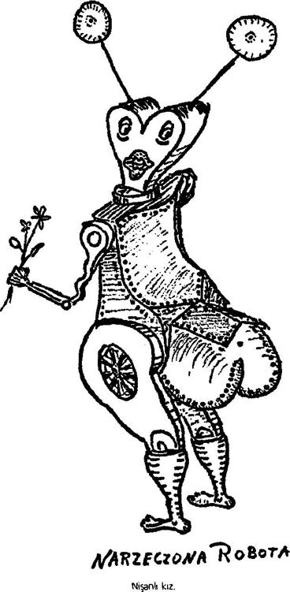

"Herhalde seyahatiniz esnasında bir hayli toz yuttunuz," dedi.
Ve yine ortaya yağdanlık, silikon ve paçavra çıktı. Ne söyleyeceğini biliyordum, robotlar anlaşılması kolay yaratıklardır. Nitekim:
"Bir parça temizlendikten sonra, lütfedin oturma odasına inin," dedi, "birlikte biraz eğleniriz..."

Ev sahibim kapıyı kapadı. Yağdanlığa ve silikona dokunmadım, sadece makyajımın ne durumda olduğunu aynada kontrol ettim, dişlerimi siyahlaştırdım ve bir çeyrek saat sonra alt kata inmeye karar verdim; gerçi o esrarlı "eğlencenin" ne olduğu konusunda biraz endişeliydim; derken evin içinden uzun, sonu gelmez bir gümbürtü yükseldi. Ama bu sefer kaçış yoktu. Gürültüden kulaklarım sağırlaşmış bir halde merdivenden indim, sanki birileri demir bir bloğu dilimlere ayırıyordu. Ses, oturma odasından geliyordu. Demir gövdesi açığa çıkacak kadar soyunmuş olan ev sahibim, masanın üzerinde yatan büyük bir oyuncak bebeği tuhaf şekilli bir satırla parçalıyordu.
"Teşrif buyurun aziz misafirimi Leşinizin üzerinde arzu ettiğiniz gibi talim edin," dedi robot, beni görünce doğramasını bıraktı ve yerde yatan biraz daha küçük bir bebeği gösterdi. Yaklaştığım sırada oyuncak oturdu, gözlerini açtı ve ince bir sesle konuşmaya başladı, durmadan aynı şeyi tekrarlıyordu:
"Efendiciğim - ben masum bir sübyanım - merhamet edin -efendiciğim - ben masum bir sübyanım - merhamet edin."
Ev sahibim bana baltaya benzeyen, ama daha kısa saplı bir satır uzattı.
"İşte aziz misafirim, dertlere elveda, kederlere elveda - vuruşunuz keskin olsun!"
"Ama ben ... ben sübyanlardan haz etmem ..." dedim, zayıf bir sesle itiraz ederek.
"Haz etmez misiniz?" diye tekrarladı robot. "Yazık. Beni güç bir duruma soktunuz dostum. Şimdi ne yapacaksınız? Bende sadece sübyanlar vardı - benim zaafım da budur. O vakit bir danaya ne dersiniz?"
Ev sahibim dolabın içinden kullanılmaya hazır bir plastik dana çıkardı, üzerine basıldığı zaman ürkek bir möleme sesi çıkarıyordu. Ne yapabilirdim? Gizli kimliğim anlaşılmasın diye, talihsiz oyuncağı parçaladım, sonunda yorgunluktan perişan düştüm. Bu arada ev sahibim, iki bebeği de kesip parçaladıktan sonra kemikkıran adını verdiği aletlerini bir kenara koydu ve bana memnun olup olmadığımı sordu. Kendisini uzun zamandır böyle bir zevk tatmamış olduğuma inandırdım.
Böylece Kamdio'daki kasvetli hayatım başladı. Ertesi sabah sıcak mineral yağından ibaret kahvaltıdan sonra, ev sahibim işine gitti, karısı ise gözü dönmüş bir şekilde yatak odasında testereyle bir şey kesmeye başladı - sanırım bir yavru danaydı bu, ama bu konuda yemin edemem. Mölemelere, haykırışlara ve dinmek bilmeyen gürültüye daha fazla katlanamayarak dışarı çıktım ve şehirde dolaştım. Şehir sakinlerinin vakit geçirme tarzları oldukça can sıkıcıydı. Kesmek, işkence tekerleğinde kırmak, yakmak ve parçalara ayırmak - şehir merkezinde pavyonları olan bir eğlence parkı vardı, burada büyük bir ustalıkla yapılmış aletler satılıyordu. Birkaç gün sonra kendi cep çakıma bile bakamaz hale geldim ve ancak açlık yüzünden alacakaranlıkta şehirden uzaklaşmaya cesaret edebiliyor, çalıların arkasına saklanıp hızla sardalyaları ve bisküvileri gövdeme indiriyordum. Yediğim şeyler yüzünden sürekli olarak hıçkırık nöbetine tutulacak gibi olmam şaşılacak bir şey değildi, bu da beni ölümcül bir tehlikeye atacaktı. Üçüncü gün tiyatroya gittik. "Carbazarius" adında bir oyunu sahneliyorlardı. Oyun, insanlar -yani sümüksüler- tarafından merhametsizce eziyet gören genç ve yakışıklı bir robot hakkındaydı; robotu ıslattılar, yağma kum koydular, durmadan düşüp dursun diye vidalarını gevşettiler v.s. Seyirciler öfke içinde madenî sesler çıkardılar. İkinci perdede Bilgisayar'ın bir elçisi göründü ve genç robot kurtarıldı, üçüncü perdedeyse insanın başına gelenler anlatıldı uzun uzun, sizin de tahmin edebileceğiniz gibi, pek hoş şeyler değildi.
Can sıkıntısından ev sahibimin özel kütüphanesini karıştırmaya başladım, ama ilginç bir şey yoktu: Marquis de Sade'ın hatıralarının birkaç ucuz baskısı, bunun dışında sadece broşürler vardı - Bir Sümüksü Nasıl Tanınır gibi şeyler, bunun birkaç satırını ezberledim. Metin şöyle başlıyordu: "Bir sümüksü çok yumuşaktır, hamur tatlısına benzer ... donuk, sulu gözleri, çirkef ruhunun aynasıdır. Yanakları kırmızı renktedir..." Yazı bu şekilde yüz sayfa kadar sürüp gidiyordu.
Cumartesi günü şehrin ileri gelenlerince ziyaret edildik -Kalaycılık Loncası'nın baş kalaycısı, belediye zırhçısının bir temsilcisi, mekanik loncasından bir usta, iki protokrat ve bir baş duvarcı - ne yazık ki, bu robotların ne çeşit işler yaptıklarını anlayamadım, zira sohbet genellikle sanat, tiyatro ve Sultan'ın mükemmelliği üzerineydi. Hanımlar biraz dedikodu yaptılar. Onlardan, Carpsidon adlı birinin -müsrif bir hayat süren, kötü şöhretli ve işe yaramaz biriydi- çevresinde topladığı bir sürü azgın elektrikli dişiyi çok pahalı tüplere ve sigortalara boğduğunu öğrendim. Ama, bu Carpsidon'dan söz ettiğim vakit ev sahibim pek öfkelenmedi.
"Genç elektrik enerjisini harcamalı," dedi ev sahibim, halden anlar bir şekilde. "Paslandığı zaman, rezistansları tıslamaya başlayacak, başka telden çalacak..."
Bize çok nadir uğrayan bir dişi muhteşem, nedense benden pek hoşlandı ve, Tanrı bilir kaç maşrapa mineral yağı yuvarladıktan sonra, şöyle fısıldadı:
"Senden haz ettim. Beni ister misin? Gel evime gidelim ve orada biraz elektriklenelim... "
Ani bir katot boşalması yüzünden dişi robotun sözlerini duymamış gibi yaptım.
Ev sahibimle karısı genellikle iyi geçiniyorlardı, ama bir keresinde istemeden bir kavgaya şahit oldum; kadın kocasına "seni hurdaya havale etmek gerek" diye bağırdı, ev sahibimse buna yanıt vermedi.
Bazen de, şehirde bir kliniği olan çok tanınmış bir elektrik ustası geliyordu ziyaretimize. Kendisinden öğrendiğime göre -ender de olsa hastaları hakkında konuşuyordu- robotlar da bazen delirirmiş ve akıl hastalıklarının en vahimi, robotun kendini insan sanmasıymış. Dahası -bunu açıkça ifade etmese de, sözlerinden anladığım kadarıyla- son zamanlarda bu tür vakaların sayısında önemli bir artış olmuştu.
Ama ben böyle ufak tefek bilgileri Dünya'ya göndermiyordum; çünkü, öncelikle, benim gözümde çok önemsiz şeylerdi, ikinci olarak da telsizin bulunduğu roketi bıraktığım dağlara gitmeye pek hevesli değildim. Güzel bir sabah, tam danamı bitirirken (ev sahibim her akşam bana bunlardan bir tane getiriyordu, bana en büyük zevki veren şeyin bu olduğunu sanıyordu) bütün ev kapının şiddetle vurulmasıyla çınladı. Korkuları mm yersiz olmadığı ortaya çıktı. Gelen polisti - yani, baltacılar. Beni tutukladılar ve tek kelime etmeksizin, ev sahibim ile karısının korku dolu bakışları altında, sokağa çıkardılar. Zincire vuruldum ve hapishaneye götürüldüm, orada öfkeli bir kalabalık çoktan girişi tutmuştu, yuh çekip bağırıyorlardı. Beni tek başıma bir hücreye attılar. Kapı ardımda gürültüyle kapandıktan sonra, derin bir iç çekerek metal somyamın üzerine oturdum. Artık iç çekmenin bana zararı olmazdı. Bir süre galaksinin değişik bölgelerinde kaç kere kodese düşmüş olduğumu hesaplamaya çalıştım, ama sayısını şaşırdım. Somyanın ayağının yanında bir şey vardı. Sümüksülerin nasıl tanınacağına dair bir broşür - oraya benimle haince alay etmek için mi konmuştu? Düşünmeden broşürü açtım. Önce, sümüksünün üst gövdesinin nasıl nefes alma denen şey yüzünden hareket ettiğini, tokalaşmak için uzatılan elin hamurumsu olup olmadığının ve yüz açıklığından hafif bir esinti gelip gelmediğinin nasıl anlaşılacağını okudum. Metnin sonunda sümüksünün, heyecanlandığı zaman, özellikle alın bölgesinde bir sıvı salgıladığı anlatılıyordu.
Yazılanlar yeterince doğruydu. Ben de o sıvıyı salgılıyordum. Kozmik keşif, hep aynı şeyin tekrarı gibi görünüyor, örneğin yukarıda söz ettiğim ve sık sık tekrarlanan, yıldızlararası, gezegensel, hatta nebular boyuttaki hapishane günleri -sanki bunlar, söz konusu girişimin kaçınılmaz bir parçasıymış gibi; ama daha önce durumum hiç şimdiki kadar umutsuz olmamıştı. Öğleye doğru bir nöbetçi bana bir tas aşırı ısıtılmış mineral yağı getirdi, içinde birkaç demir parçası yüzüyordu. Biraz daha besleyici bir şey istedim, zira nasılsa kim olduğum anlaşılmıştı, ama robot sadece alay edercesine gıcırdadı ve tek kelime etmeksizin gitti. Bir avukat isterim, diye kapıyı yumruklamaya başladım. Kimse karşılık vermedi. Akşama doğru, zırhımın içinde bulduğum son bisküvi parçasını da yedikten sonra, kilidin içinde bir anahtar gıcırdadı ve hücreye kalın bir el çantası taşıyan tıknaz bir robot girdi.
"Kahrolası musibet," dedi robot ve ekledi, "ben senin dava vekilinim."
"Müvekkillerinizi hep böyle mi selamlarsınız?" dedim, oturarak.
Avukat da madenî sesler çıkararak oturdu. İğrenç bir şeydi. Karnının üzerindeki levhalar tamamen gevşemişti.
"Sümüksüleri, evet," dedi adam, inançlı bir şekilde. "Sana değil, seni gidi utanmaz iblis, sırf mesleğime olan sadakatim yüzünden maharetimi müdafaan için kullanacağım, seni yaratık! Belki seni bekleyen ceza tek bir sökülmeye indirilebilir."
"Sen ne diyorsun?" dedim. "Benim sökülmem mümkün değil."
"Ha!" diye gıcırdadı robot. "Sen öyle zannet! İmdi söyle bakalım ne melânet tasarlıyordun, seni gidi musibet iblis! !" "Adınız nedir?" diye sordum. "Klaustron Fredrax."
"Söyle bana, Klaustron Fredrax, neyle suçlanıyorum?"
"Sümüksü olmakla," diye hemen yanıtladı robot. "Büyük bir cürüm. Ayrıca, bize ihanet etmeye niyetlenmek, Pelteler adına çaşıtlık yapmak, Devletlû Sultanımıza karşı kâfirce kumpas kurmakla - kâfi mi, mundar sümüksü? Suçunu itiraf edecek misin?"
"Gerçekten benim avukatım mısın?" diye sordum. "Zira bir savcı veya sorgu hâkimi gibi konuşuyorsun." "Dava vekilinim."
"Güzel. Saydığın suçların hiçbirini kabul etmiyorum."
"Yer gök inleyecek!" diye gürledi robot.
Bana ne çeşit bir avukat vermiş olduklarını anlayınca, başka bir şey söylemedim. Ertesi gün dışarı çıkarılıp sorguya çekildim. Hâkimin, avukatımdan daha şiddetli bir şekilde gürlemesine rağmen, hiçbir şeyi kabul etmedim. Hâkim kâh gürlüyor, kâh fısıldayarak konuşuyor, kâh madeni kahkahalar atıyor, sonra sakince, muhteşemlerin adaletinden kaçmamın kendisinin nefes almaya başlamasından daha zor olduğunu anlatıyordu.
Bir sonraki sorgulamada, içinde parlayan tüplerin sayısına bakarak önemli biri olduğunu düşündüğüm bir şahsiyet vardı. Dört gün daha geçti. En önemli sorunum yiyecekti. Pantolon kayışımla yetinmek zorunda kaldım, onu günde bir kere bana getirdikleri suyun içinde yumuşatıyordum. Nöbetçi, kabı, sanki içinde zehir varmış gibi kendinden uzak tutarak taşıyordu.
Bir hafta sonra kayış bitti, neyse ki ayağımda keçi derisinden yapılmış bağcıklı botlar vardı - botların dili, hücrede geçirdiğim günler süresince yediğim en iyi şey oldu.
Sekizinci gün, şafak vakti iki nöbetçi eşyamı toplamamı emretti. Bir kamyonun içine kondum ve bir eskort eşliğinde Bilgisayar'ın meskeni Demir Saray'a götürüldüm. Muhteşem, paslanmaz merdivenlerden çıktık, katot tüplerinin sıralandığı koridorlardan geçtik ve çok büyük, penceresiz bir odaya sokuldum. Nöbetçiler beni yalnız bırakarak çekildiler. Odanın ortasında tavandan yere kadar inen siyah bir perde vardı, kıvrımları odanın ortasındaki kare şeklindeki yeri çevreliyordu.
"Ey biçare sümüksü!" diye gürledi bir ses, sanki borular aracılığıyla demir bir kubbeden geliyordu. "Son saatin yaklaştı. Konuş. Hangisini istersin: Etparçalayan mı, kemikkıran mı, yoksa hidrolik matkap mı?"
Bir şey demedim. Bilgisayar madenî sesler çıkarıp uğuldadı, sonra haykırdı:
"Sözlerime kulak ver, ey Pelte ırkı adına topraklarımıza ayak basan sümüksü canavar! Kudretli sesime kulak ver, ey biçare kan pıhtısı, ey sümüklü emülsiyon! Nurlu cereyanımın azametiyle sana merhamet ediyorum: Şayet sadık bendelerimin saflarına katılırsan, şayet bütün ruhun ve bedeninle gerçek bir muhteşem olursan, belki seni affedebilirim."
Kendisine, yıllardır bunun hayalini kurduğumu söyledim. Bilgisayar kıkırdadı, alaycı bir şekilde titredi ve şöyle dedi:
"Yalan söylediğini biliyorum. Ama kulak ver, ey sürfe! Sümsük varlığın, ancak bir muhteşem baltacı kılığına girerek idame ettirebilirsin. Vazifen bütün sümüksülerin, çaşıtların, ajanların, hainlerin ve Pelte'nin gönderdiği bunun gibi habis haşaratın maskesini düşürmek, onları teşhir etmek, beyaz demirle damgalamaktır, ancak böylesi bir sadık hizmetle yapışkan derini kurtarmayı ümit edebilirsin."
Her şey için yemin billah ettikten sonra, robotlar beni başka bir odaya götürdüler, orada kayıt defterine yazıldım ve her gün baltacıların merkezine rapor verme emrini aldım - bütün bunlardan sonra elim ayağım tutmaz bir halde saraydan çıkıp gitmeme izin verildi.
Gece oluyordu. Şehrin dışına çıktım, çayırların üzerine oturup düşünmeye başladım. Vicdan azabı duyuyordum. Kafamı kesselerdi hiç olmazsa şerefimi kurtarmış olacaktım, ama şimdi o elektronik canavarın safına geçmekle, temsil ettiğim davaya ihanet etmiş, bütün geleceğimi mahvetmiştim. O halde ne yapmalı, rokete mi sığınmalıydım? Utanç verici bir ricat. Yine de yürümeye başladım. Demir sandıklardan oluşan bir orduyu yöneten bir bilgisayarın casusu olmak daha utanç verici olacaktı. Roketi bırakmış olduğum yerde sadece dağılmış kalıntılar, kırılmış parçalar bulduğum vakit -kesinlikle robotların işiydi bu- duyduğum dehşeti anlatacak kelime bulamıyorum.
Şehre döndüğümde hava kararmıştı. Bir taşın üzerine oturdum ve hayatımda ilk defa evim için ağladım -onu bir daha asla göremeyecektim- ve gözyaşlarım, bundan sonraki yaşamımda zindanın olacak o demir kılıfın içine akıp dizlerimdeki yarıklardan içeri sızdı; eklem yerlerim paslanma yüzünden sertleşebilirdi, ama artık aldırış etmiyordum.
Derken, ansızın, bir baltacı müfrezesinin, ağır ağır, şehrin kenarındaki bir meraya doğru gittiklerini fark ettim, batan güneşin son ışıkları onları aydınlatıyordu. Tavırları tuhaftı. Akşamın artan karanlığında önce biri, sonra diğeri saflardan ayrıldı ve elinden geldiğince sessiz bir şekilde yürüyerek çalıların arasına girdi ve ortadan kayboldu. Bu iş bana o kadar tuhaf göründü ki, ruhsal olarak büyük bir çöküntü içinde olmama rağmen, hemen ayağa kalktım ve bana en yakın olanın peşine takıldım.
Şunu da eklemeliyim ki, o sıralar çalılıklardaki yabani meyvelerin olgunlaşma mevsimiydi, bunların tadı böğürtlene benziyordu, tatlı ve lezzetliydiler. Onlardan ben de yemiştim, yani demir şehirden gizlice kaçmayı başarabildiğim vakitler. Baltacı, küçük bir anahtar -merkezdeki adamın bana vermiş olduğunun tam bir kopyası- çıkardığı, onunla yüzünü örten kapağı açtığı ve iki eliyle böğürtlenleri avuçlayıp açık deliğe vahşi gibi tıkıştırdığı vakit duyduğum şaşkınlığı tasavvur edebiliyor musunuz? Bulunduğum yerden bile şapırtı ve yutkunma seslerini duyabiliyordum.
"Hişt," dedim, aceleyle. "Hey!"
Baltacı bir sıçramayla paldır küldür çalıların arasına daldı, ama fazla uzaklaşmadı - yoksa onu duyardım. Bir yerlere düşmüştü.
"Dinle," dedim daha alçak bir sesle. "Korkma. Ben de bir insanım. Bir insan. Senin gibi kılık değiştirmiş birisi."
Tek bir göz, korku ve şüpheyle parlayarak, bir yaprağın altından beni süzdü.
"Beni gammazlamayacağını nereden bileceğim?" dedi boğuk bir ses.
"Sana anlatmaya çalışıyorum. Ben Dünya'dan geldim. Beni özel olarak gönderdiler."
Çalılardan sürünerek ortaya çıkması için, bir süre daha onu ikna etmeye uğraştım. Adam karanlıkta zırhıma dokundu.
"Sen bir âdem misin? Sahi mi?"
"Niçin doğru düzgün konuşmuyorsun?"
"Heyhat, nisyanın zâlâmına gömüldü lisanım. Kaza ve kader beni on beş sene evvel buralara attı ... o kadar mustarip oldum ki tarifi imkânsız... Felek insafa gelip emr-i Hak vaki olmadan evvel bana hakiki bir sümüksü gösterdi..." diye başladı lafa adam.
"Kendine gel. Bu kadarı yeter! Dinle - Seni İstihbarat yollamış olabilir mi?"
"Elbette, İstihbarat. Beni Malingraut gönderdi, bu diyarda bin bir zahmet ve ıstırap çekeyim diye."
"Peki niçin kaçmadın?"
"Nasıl kaçabilirdim? Roketim söküldü ve parçalara ayrıldı. Heyhat, ben bir kader kurbanıyım! İmdi dönme vakti... birbirimizi tekrar görecek miyiz? Yarın, kışlada ... gelmez misin?"
Adamın neye benzediğini bile bilmediğim halde onunla buluşmayı kabul ettim ve vedalaştık; adam bir süre daha orada beklememi istedi ve gecenin karanlığında kayboldu. Şehre daha ferahlamış bir şekilde döndüm, zira artık bir kumpas kurma şansım olabilirdi. Gücümü toplamak için önüme çıkan ilk handa durdum ve yattım. Ertesi sabah erkenden kalkıp aynaya baktığımda, göğsümde bir tebeşir izi gördüm, sol omuzun hemen altında küçük bir haç işareti vardı; birden işin iç yüzünü anladım: O adam - beni ele vermek için yapmıştı bunu! "Seni gidi çakal," diye mırıldandım, çileden çıkmış bir halde ne yapmam gerektiğini düşünmeye başladım. Hainin yaptığı işareti sildim, ama bu yeterli olmazdı. Adam çoktan rapor vermiş olmalıydı - bundan emindim; hiç vakit yitirmeden o bilinmeyen sümüksüyü aramaya başlayacaklar, şüphesiz ilk önce sicil defterlerine bakacaklar ve en şüpheli kişileri sorguya çekeceklerdi - ben de hiç şüphesiz o listedeydim; sorguya çekileceğim düşüncesi beni titretti. Bir şekilde şüpheyi kendimden uzaklaştırmam gerektiğini anladım ve hemen aklıma bir fikir geldi. Bütün gün handa kaldım, dikkat çekmemek için bir danaya işkence ediyormuş gibi yaptım, ama hava kararınca hemen şehir merkezine yöneldim, avcumun içine bir tebeşir parçası saklamıştım. Bununla, yanımdan geçen en az dört yüz demir gövdeye haç işareti çizdim; yoluma kim çıktıysa işaretlendi. Gece yarısına doğru, nedense içim biraz rahatlamış bir halde, hana döndüm; fakat çalılıklarda, geçen gece konuşmuş olduğum hainin dışında başka baltacılar da olduğunu hatırladım. Bu, durup düşünmeme neden oldu. Sonra ansızın aklıma çok şaşırtıcı bir fikir geldi. Şehirden çıkıp böğürtlenlere yöneldim. Gece yarısından biraz sonra, o robot grubu yine göründü; yavaşça birbirlerinden ayrılıp dağıldılar, sonra yakınlardaki çalılıklardan derin nefes alma, şiddetli çiğneme ve aceleyle yutma sesleri gelmeye başladı; sonra yüz kapaklan birer birer kapandı ve bütün grup mideleri böğürtlenle tıka basa dolmuş bir şekilde sessizce çalılıklardan çıktı. Yanlarına yaklaştım - karanlıkta beni kendilerinden biri sandılar; yürürken yanımdakilerin üzerlerine -neresine olursa- küçük daireler çizdim. Kışlanın kapısında gerisin geri dönüp hana gittim.
Ertesi gün kışlanın dışında bir sıraya oturdum ve izinli olanların dışarı çıkmasını bekledim. Kalabalık içinde omzunda daire işareti olan birisini görünce peşine düştüm ve sokakta kim se olmadığı bir sırada demir eldivenimle sırtına vurdum, adam baştan ayağa sarsıldı, ben de ona şöyle dedim:
"Devletlü Sultanın namına! Benimle gel!"
O kadar korkmuştu ki, yeniden madenî sesler çıkarmaya başladı ve tek kelime etmeden kuzu kuzu peşimden geldi. Odamın kapısını kapadım, cebimden bir tornavida çıkardım ve başlığını sökmeye başladım. Bu iş bir saatimi aldı. Başlığı demir bir kazan gibi kaldırdım; altından, uzun süredir güneş yüzü görmediği için rahatsız edici derecede solgun, zayıf ve korkulu bir yüz çıktı.
"Bir sümüksü müsün!?" dedim, öfkeyle.
"Evet, muhterem efendim, ama -"
"Ama ne?!"
"Ama ben, yani ... ben sicil defterine kaydoldum... Sultana sadakat yemini ettim!"
"Ne kadar zaman evvel! Konuş!"
"Üç ... üç sene evvel, efendim - ama siz hangi nedenle -" "Sus," dedim. "Tanıdığın başka sümüksüler var mı?" "Arz da mı? Hakikati söylemek gerekirse, evet var, beyzadem, merhamet edin, sadece -"Dünya'da değil, budala, burada!"
"Hayır, efendim! Ama eğer bir tanesini görürsem, hemen ihbar -"
"Pekâlâ," dedim. "Gidebilirsin. İşte, kafanı yerine tak."
Vidaları adama fırlattım ve onu kapıdan dışarı ittim; adamın, titreyen elleriyle demir başlığını takmaya çalıştığını işitebiliyordum. Sonra yatağımın üzerine oturdum, olayların bu şekilde gelişmesi beni şaşırtmıştı. Bir sonraki hafta çok dolu geçti, zira sokaktan rastgele kişileri çekip aldım, onları hana götürüp başlıklarını söktüm. Sezgilerimde yanılmamıştım: Hepsi insandı, en sonuncusuna kadar! Aralarında tek bir robot bile yoktu! Yavaş yavaş, gözlerimin önünde mahşerî bir manzara şekillenmeye başladı...
Bir şeytandı, elektrikli bir şeytan - o Bilgisayar! Parlak tellerinin içinde nice felaketler saklıydı! Gezegen ıslak, nemli ve yapışkandı - robotlar için çok sağlıksız bir yerdi ... robotların hepsi paslanmış olmalıydı ve yıllar geçtikçe, yedek parça eksikliği arttıkça, bozulmaya başlamışlar ve birer birer şehrin dışındaki büyük mezarlığı boylamışlardı; o paramparça metal tabakalarının tek ağıtçısı rüzgârdı. İşte o zaman Bilgisayar, tebaasının azaldığını ve saltanatının tehlikeye düştüğünü görünce, dahice bir plan yapmıştı. Düşmanlarından, kendisini yok etmek için gönderilen ajanlardan, kendi ordusunu, kendi ajanlarını ve kendi halkını yaratmaya başlamıştı! Maskeleri düşen kişilerin hiçbiri ona ihanet edemezdi - hiçbiri başkalarıyla, başka insanlarla ilişki kuramazdı, zira onların robot olmadığını bilmesine imkân yoktu ve herhangi bir tanesi hakkında bir şeyler öğrense bile, ilk girişiminde diğer adamın onu ihbar edeceğinden korkardı - tıpkı böğürtlen çalılıklarında yakalamış olduğum ilk sahte baltacının yapmaya çalıştığı gibi. Üstelik Bilgisayar, düşmanlarını sadece etkisiz kılmakla yetinmemişti - her birini kendi davasının savunucusu kılmış, onlardan yeni gelenleri ele vermelerini istemişti, bu da Bilgisayar'ın şeytanca zekâsının bir başka kanıtıydı: İnsanlarla robotları bu adamlardan daha iyi kim ayırt edebilirdi ki, ne de olsa hepsi İstihbarat Servisi'nin sırlarını biliyordu!!
Böylece, maskesi düşen herkes deftere kaydedilmiş, yemin etmiş ve kendini yapayalnız hissetmişti; üstelik, belki de robotlardan daha çok hemcinslerinden korkar olmuşlardı, zira bütün robotlar gizli polisin ajanı değildi, ama insanlarım hepsi ajandı. İşte elektronik canavar hepimizi bu şekilde esir etmiş, herkesi birbirinin düşmanı haline getirmişti - roketimi parçalayanlar muhtemelen benim yoldaşlarımdı ve, baltacının sözlerinden anladığım kadarıyla, çok sayıda rokete de aynı şeyi yapmışlardı.
"İblisçe, iblisçe!" diye düşündüm, öfkeyle titreyerek. Makinenin bizleri birer haine dönüştürmesi yetmezmiş gibi, Merkez , adeta onun keyfine hizmet edercesine, durmadan yeni ajanlar yolluyordu - hatta Dünya, ona en iyi cins, paslanmaz ve en yüksek kalitede donanım sağlamaktaydı. Acaba bu demir giysili kölelerin arasında hiç robot kalmış mıydı? Bu konuda ciddi şüphelerim vardı. Robot kılığındaki adamların in san avcılığında gösterdikleri gayretin nedeni de anlaşılıyordu. Kendileri insan oldukları için -Muhteşemabad'ın yeni sakinleri olarak- gerçek robotlardan daha çok robot olmak zorundaydılar. Avukatımın sergilediği fanatik nefretin nedeni buydu. Maskesini düşürdüğüm ilk adamın, beni haince ele verme teşebbüsünün nedeni de buydu. Makaralardan, elektrik devrelerinden nasıl olur da böylesi bir şeytanlık doğardı, bu nasıl bir hinlikti böyle?!
Sırrı açıklamak işime yaramazdı, Bilgisayar'ın bir emriyle sorgusuz sualsiz zindana atılırdım. Hayır, insanlar çok uzun bir zamandır itaat ediyorlar, çok uzun bir zamandır elektrikli Belzebuth'a bağlılık numarası yapıyorlardı, doğru dürüst konuşmayı bile unutmuşlardı!
O halde ne yapabilirdim? Gizlice saraya girmek mi? Bu çılgınlık olurdu. Ama başka ne yapabilirdim? Esrarengiz bir durumdu: Ortada bir şehir vardı, mezarlıklarla çevrilmiş bir şehir, Bilgisayar'ın çoktan toza dönüşmüş tebaası orada yatıyordu; buna rağmen o, her zamankinden daha güçlü ve kendinden emin bir şekilde hükmünü sürdürüyordu, zira Dünya durmadan birbiri arkasına yeni adamlar gönderiyordu - ne kadar aptalca! Düşündükçe, açıkça görüyordum ki, benden önce başka birisi tarafından da yapılmış olması gereken bu keşif, durumu hiçbir şekilde değiştirmemişti. Tek bir kişinin elinden hiçbir şey gelmezdi; sırrını bir başkasına açması, birisine güvenmesi gerekirdi, ama bunun sonucu hemen ele verilmek olacaktı; hain, terfi etmek ve makinenin gözüne girmek isteyecekti. "Aziz Electrix aşkına!" diye düşündüm, "çok dahice bir..." ve bunları düşünürken, artık benim de konuşma tarzımda hafif bir değişiklik olduğunu fark ettim, ben de aynı hastalığı kapmıştım, demir başlıklar bana normal geliyordu, bir insan yüzüyse - çıplak, çirkin, ahlâk dışı .... sümüksü bir şeydi. "Aman Tanrım, aklımı kaçırıyorum," diye düşündüm, "Diğerleri yıllar önce delirmiş olmalı - imdat!"
Kasvetli düşünceler içinde geçen bir geceden sonra, şehir merkezindeki bir markete gittim, otuz piston ödeyerek bulabildiğim en keskin satırı satın aldım ve karanlığın çökmesini bekledim; sonra gizlice, Bilgisayar'ın sarayını çevreleyen büyük bahçeye girdim. Çalılıkların arasında saklanarak bir kerpeten ve tornavida yardımıyla demir zırhımdan kurtuldum ve ayak parmaklarımın ucunda, yalınayak, hiç gürültü etmeden, yağmur oluğundan ikinci kata tırmandım. Pencere açıktı. Koridorda bir nöbetçi, tıngırdayarak bir aşağı bir yukarı yürüyordu. Koridorun karşı ucunda arkasını döndüğü vakit, içeri adadım ve en yakın kapıya koşup sessizce içeri girdim - kimse beni fark etmedi.
Daha önce Bilgisayar'ın sesini işitmiş olduğum büyük odaydı burası. Karanlıktı. Siyah perdeyi açtım ve Bilgisayar'ın tavana kadar yükselen devasa duvarını gördüm, göstergeleri göz gibi parlıyordu. Kenarında beyaz bir çatlak vardı. Görünüşe göre açık bırakılmış bir kapıydı. Parmaklarımın ucuna basarak kapıya yaklaştım ve nefesimi tuttum.
Bilgisayar'ın içi ikinci sınıf bir otelin küçük bir odasını andırıyordu. Arkada yarı açık bir kasa vardı, fazla büyük değildi, kilidinden bir deste anahtar sarkıyordu. Üzerinde kâğıtların yığılı olduğu çalışma masasında, yaşlıca, kara kuru bir adam oturuyordu; gri bir takım giymişti, kollarında kâtiplerin taktığı kolluklardan vardı; bir şeyler yazıyor, birbiri ardınca fişler dolduruyordu. Dirseğinin yanında dumanı tüten bir fincan kahve, tabağında birkaç kraker vardı. Parmaklarımın ucuna basa basa içeri girdim ve kapıyı ardımdan kapattım. Menteşeler gıcırdamadı.
"Öhö," dedim, satırı iki elimle kaldırarak.
Adam şaşırdı ve başını kaldırıp bana baktı; elimdeki satırın parıltısı onda büyük bir korku yarattı. Yüzü çarpıldı, dizlerinin üzerine çöktü.
"Hayır!!" diye inledi. "Hayır!!"
"Sesini bir daha yükseltirsen bunu canınla ödersin," dedim. "Kimsin?"
"Heheptagonius Argusson, efendimiz."
"Ben senin efendin değilim. Bana Bay Tichy diyeceksin, anlaşıldı mı?!"
"Evet efendim! Evet! Evet!"
"Bilgisayar nerede?" "Ba-ay. .."
"Ortada bir Bilgisayar yok, öyle değil mi? !"
"Yo - yok efendim! Ben sadece emirlere itaat ediyorum!"
"Şüphesiz. Bu emirleri kimden alıyorsun, sorabilir miyim?"
Adam bir yaprak gibi titredi. Ellerini yalvarırcasına kaldırdı.
"İşler o kadar karışacak ki..." diye inledi. "Lütfen! Bana söyletmeyin, efen- özür dilerim! Bay Tichy! - Ben - ben sadece bir kâtibim, altıncı kademeden, ücretli... "
"Yok canım! Ya Bilgisayar? Robotlara ne demeli?"
"Bay Tichy, acıyın bana! Size bütün gerçeği anlatacağım! Şefimiz - bunu o düzenledi. Kaynaklar ayrıldı - operasyonları genişletmek için, artırmak - ah - verimliliği artırmak için ... araştırma ve gelişme için, adamlarımızın ne kadar sağlam olduğunu anlamak için, ama önemli olan kaynaklardı..."
"Yani bu işin bir aldatmaca olduğunu mu söylüyorsun? Hepsi mi?!"
"Bilmiyorum! Yemin ederim bilmiyorum! Ben buraya geldiğimden beri bir değişiklik olmadı, burada yönetici olduğumu sanmayın sakın. Tanrı muhafaza - benim işim sadece personel dosyalarını tutmak. Esas mesele şuydu ... adamlarımız düşman karşısında, kritik bir durumda, cesaretlerini kaybedecekler miydi, yoksa ölümü göze alarak savaşmaya hazırlar mıydı?"
"Niçin hiç kimse Dünya'ya geri dönmedi?
"Çünkü hepsi birer hain olmayı seçti, Bay Tichy ... tek bir tanesi bile hayatını feda etmek istemedi, Pelte uğruna - yani bizim davamız uğruna, demek istiyorum, alışkanlık yüzünden o kelimeyi kullandım, lütfen anlamaya çalışın, on bir yıldır burada oturuyorum ve sadece bir yıl daha, ondan sonra emekli olacağım, bir maaş bağlanacak, karım ve çocuklarım var, Bay Tichy, bu yüzden Tanrı aşkına-"
"Kes sesini!!" dedim öfkeyle. "Emekli maaşı istiyorsun ha, köpek herif, ben sana emekli maaşını gösteririm!!"
Satırı havaya kaldırdım. Kâtibin gözleri yerinden fırladı, yerlerde sürünmeye başladı.
Ayağa kalkmasını emrettim. Kasanın, hava almaya yarayacak küçük bir ızgaralı deliği olup olmadığını kontrol ettikten sonra, adamı içine kilitledim.
"Ağzından tek bir ses çıkmasın! Eğer elinle veya ayağınla vurursan, bu sefer sıra et parçalayıcıya gelecek!!"
İşin geri kalan kısmı basitti. O gece, geçirmiş olduğum en hoş gecelerden biri sayılmazdı, zira incelemem gereken belgeler vardı - raporlar, bildiriler, yeminli ifadeler, kayıtlar, dosyalar, gezegendeki herkesin bir dosyası vardı. Gizli belgelerle kendime çalışma masasının üzerinde bir yatak yaptım, uyuyacak başka yer yoktu. Sabahleyin mikrofonu açtım ve Bilgisayar olarak, herkesin sarayın önünde toplanmasını emrettim. Herkes yanında bir kerpeten ve tornavida getirecekti. Robotlar, demirden yapılmış dev satranç taşları gibi dizilince, onlara Aziz Electrix'in kapasitansı adına birbirlerinin başlıklarını sökmelerini emrettim. Saat on birde ilk insan kafaları ortaya çıkmaya başladığında, ortalığı bir karmaşa, patırtı sardı - "İhanet! İhanet!" haykırışları yükseliyordu - bütün bu sesler, birkaç dakika sonra, son demir başlık da taş yola düşünce, tek bir sevinç çığlığına dönüştü. Daha sonra kendi kimliğimle ortaya çıktım ve herkesin yönetimim altında işe koyulmasını önerdim - zira elimizdeki ham maddeleri ve malzemeyi kullanarak büyük bir gemi yapmak istiyordum. İşe bakın ki, sarayın mahzenlerinde birkaç uzay gemisi olduğu ortaya çıktı, üstelik depolan doluydu ve gitmeye hazır haldeydiler. Hareketten önce Argusson'u kasadan çıkardım, ama onu gemiye almadım, kimsenin de almasına izin vermedim. Adama, şefine her şeyi anlatmak niyetinde olduğumu söyledim, ayrıca kendisi hakkında düşüncelerimi de ayrıntılı bir şekilde ifade edecektim.
Böylece, maceralarımın ve yolculuklarımın en olağanüstülerinden biri daha sona erdi. Çektiğim bütün zorluklara ve acıya rağmen sonuçtan memnundum, zira elektronik beyinlerin doğaları gereği ahlâklı oldukları yolundaki -yozlaşmış kozmik görevlilerce sarsılan inancım, yeniden canlanmıştı. Evet, düşününce, sadece insanın alçak olabileceğini bilmek rahatlatıcı bir şey.
ON İKİNCİ YOLCULUK
Hiçbir yolculuğum sırasında, Amauropia'daki -Kiklop takım yıldızına ait bir gezegendir- kadar tüyler ürpertici tehlikelere atılmadım. Orada başıma gelenler tamamen Profesör Tarantoga yüzünden. Bu bilgili astrozoolog, sadece büyük bir kaşif değildir; boş zamanlarında, belki sizin de bildiğiniz gibi, icatlar yapar. katları arasında, hoş olmayan anıları zihinden çıkarmak için bir sıvı; sonsuz değerde kâğıt para olarak kullanılmak üzere, üzerinde yatay sekiz biçimindeki sonsuzluk işareti olan banknotlar; sisi göze hitap edecek güzel renklere boyamak için üç ayrı yöntem; bulutların üzerine serpildikten sonra, onları uygun kalıplara sokarak sürekli katı halde kalmalarını sağlayan özel toz sayılabilir. Ayrıca, küçük çocukların -herkes onların bir dakika bile kımıldamadan oturamadıklarını bilir- çoğu zaman boşa giden enerjilerinden yararlanmayı sağlayan cihaz da ona aittir.
Bu cihaz, evin çeşitli yerlerine konmuş kollar, makaralar ve manivelalardan oluşan bir sistemdir ve çocuklar oyun oynarken, o sırada su pompaladıklarından, çamaşır yıkadıklarından, patates ayıkladıklarından, elektrik ürettiklerinden vs. habersiz bir şekilde, bunları iter, çeker ve hareket ettirirler. Profesör, anne ve babalarının arada sırada evde tek başına bıraktıkları bu en genç vatandaşlarımızı düşünerek, çakınca yanmayan çakmaklar da tasarlamıştır. Şu sıralarda Dünya'da bunların seri üretimine geçilmiştir.
Bir gün Profesör bana son buluşunu gösterdi. Önce baktığım şeyin küçük bir demir soba olduğunu sandım, Tarantoga da aslında çıkış noktasının bu olduğunu itiraf etti.
"Sevgili İjon, gördüğün şey insanoğlunun çok eski bir düşünün gerçeğe dönüşmesidir," dedi Profesör. "Yani zaman genişleticisi, ya da istersen zaman geciktiricisi de denebilir. Hayatın sınırsız bir şekilde uzamasına imkân veriyor. Cihazın içinde geçen bir dakika, eğer hesaplamalarım doğruysa, kabaca iki aya denk geliyor. Denemek ister misin?..."
Her zaman teknik yeniliklere karşı ilgi duyduğum için, cihazın içine seve seve girdim. Çömelir çömelmez, Profesör küçük kapıyı çarparak kapadı. Burnum kaşındı; sobanın hızla kapatılmasıyla içinde kalmış olan kurum parçaları havaya kalkmıştı, bu yüzden nefes aldığımda hapşırdım. Tam o anda Profesör elektrik akımını açtı. Zamanın geçmesindeki gecikme yüzünden, hapşırığım beş gün beş gece sürdü ve Tarantoga yeniden küçük kapıyı açtığı vakit, yorgunluktan neredeyse bayılmak üzereydim. Profesör önce şaşırıp üzüldü, ama olup biteni öğrenince, neşe içinde gülümseyerek şöyle dedi:
"Ama aslında benim saatime göre sadece dört saniye geçti. Peki, Ijon, bu icat hakkında ne diyorsun?"
"Gerçeği söylemek gerekirse, mm, sanırım üzerinde biraz daha çalışılması gerek - yine de gerçekten önemli bir şey," dedim, soluğum düzelince.
Değerli Profesör bu sözlerime biraz üzüldü, ama sonra cihazın zamanın hızlandırılması için de kullanılabileceğini söyleyerek, onu büyük bir cömertlikle bana hediye etti. Kendimi biraz yorgun hissettiğim için, bu diğer olasılığı denemeyi daha sonraya bırakarak, Profesör'e yürekten teşekkür ettim ve makineyi evime götürdüm. Doğrusunu söylemek gerekirse, cihazla ne yapacağımdan pek emin değildim; bu yüzden onu tavan arasındaki uzay atölyeme koydum ve makine, altı aydan uzun bir süre orada kaldı.
Profesör, Astrozooloji adlı tanınmış eserinin sekizinci cildini yazarken, Amauropia'da yaşayanlarla ilgili bazı ayrıntılı bilgiler edinmişti. Bu varlıkların, zaman yavaşlatıcısını (ve hızlandırıcısını) denemek için çok iyi bir fırsat olabileceği fikri geldi aklına.
Bu planı öğrendiğim zaman o kadar heyecanlandım ki, üç haftadan kısa bir sürede roketime erzak ve yakıt yükleyip Galaksi'nin pek bilinmeyen o bölgesine ait haritaları -cihazla birlikte- yanıma alarak daha fazla vakit kaybetmeden havalandım. Aceleci davranmamın bir nedeni de, Amauropia'ya gitmenin yaklaşık otuz yıl sürmesiydi. Bütün o süre boyunca neler yaptığımı başka bir yerde anlatsam daha iyi olur. Burada sadece çok ilginç olaylardan birine değineceğim; bu olay, galaktik çekirdek yakınlarında (şunu da ekleyeyim ki burası evrendeki en tozlu yerdir) Çinganlar adıyla bilinen yıldızlararası gezgin bir kabileye rastladığım zaman başımdan geçti.
Bu talihsiz topluluğun kendilerine ait bir gezegeni yoktur. Kibarca söylemek gerekirse, bu yaratıklar son derece zengin bir hayal gücüne sahiptir, zira her biri bana kabilenin kökeni hakkında değişik şeyler anlattı. Sonraları bunların, kendi gezegenlerini parçalayarak yok ettikleri yolunda rivayetler işittim; yani görülmemiş bir açgözlülük, onları, toprağı parça parça koparıp maden aramaya ve çeşitli mineralleri ihraç etmeye itmişti. Bu girişim doğrultusunda açtıkları tünellerle gezegenlerinin içini oymuş, onu tamamen boşaltmışlardı; sonunda ellerinde sadece çok derin bir çukur kalmış, o da günün birinde ayaklarının altında çökmüştü. Çinganların, bundan uzun süre önce, bir içki alemi sırasında yelken açtıklarını, yollarını kaybedip bir daha geri dönemediklerini savunanlar da var. Görünüşe bakılırsa hiç kimse ne olduğunu bilmiyor, ama ne olursa olsun, bu uzay gezginleri hiçbir yerde hoş karşılanmıyorlar; zira uzayda yol alırken, ne zaman bir gezegende mola verseler, göz açıp kapayıncaya kadar bir şeyler ortadan kayboluyordu; bazen havada bir azalma oluyor, bazen bir ırmak ansızın kuruyor ya da adaların sayısında bir eksilme meydana geliyordu.
Bir defasında Ardenuria'da, bütün bir kıtayı kaçırıp götürdükleri rivayet ediliyordu, neyse ki kıta buzlarla kaplı olduğu için kullanılmıyordu. Çinganlar, ücret karşılığında ayların temizlenip ayarlanması işini yapıyorlardı, ama bu önemli sorumluluklar için onlara güvenen pek az kimse vardı. Çinganların gençleri kuyruklu yıldızlara taş atıyor, yaşlı göktaşlarının üzerine biniyordu - kısacası açtıkları dertlerin sonu yoktu. Böylesi bir hayat tarzının hoşgörü sınırlarını aştığına karar verdim ve, yolculuğuma kısa bir ara vererek, işe koyuldum - hatırı sayılır bir başarı elde ettiğimi de söyleyebilirim; zira elden düşme, çok iyi durumda bir ay temin edebildim. Ay onarıldı ve üst mevkilerdeki tanıdıklarım sayesinde bir gezegen statüsüne getirildi.
Şüphesiz bu yeni gezegende hiç hava yoktu, ama bir yardım kampanyası başlattım, komşu gezegenlerin hepsi buna katıldı; sonunda Çinganların, kendilerine ait bu gezegene nasıl sevinç içinde ayak bastıklarını görmeliydiniz! Bana nasıl teşekkür edeceklerini bilemediler. Onlarla içten bir şekilde vedalaştıktan sonra yoluma devam ettim. Amauropia'ya altı katrilyon milden az kalmıştı; yolun bu son bölümünü geçtikten ve hedefim olan gezegeni bulduktan sonra -ortalık gezegenden geçilmiyordu- inişe geçtim.
Fren yapma sırası gelince, dehşet içinde, frenlerin çalışmadığını ve bir taş gibi gezegene düşmekte olduğumu fark ettim. Başımı kapıdan uzatınca, frenlerin yerinde olmadığını gördüm. Öfke içinde nankör Çinganlar düşündüm, ama bununla harcanacak vakit yoktu, zira atmosferde hızla ilerliyordum ve roket ateş gibi kızmıştı. Bir dakika içinde canlı canlı yanacaktım.
Neyse ki son anda zaman genişleticisi geldi aklıma; cihazı çalıştırınca, zamanın geçişini o kadar yavaşlattım ki gezegene düşüşüm üç hafta sürdü. Böylece bu güç durumdan kurtulunca, nerede olduğumu anlamak için çevreme bakındım.
Roket, açık mavi renkte bir ormanın çevrelediği geniş bir açıklığa inmişti. Süpürge şeklinde dallar olan ağaçların üzerinde büyük bir hızla hareket eden zümrüt yeşili yaratıklar vardı. Bir hayvan sürüsü beni görünce aceleyle mor çalılara doğru koşuştu; bunlar inanılmaz derecede insana benziyordu, sadece derileri parlak ve safir rengindeydi. Tarantoga'dan onlar hakkında bir-iki şey öğrenmiştim ve uzay gemiciliği el kitabımı çıkararak, birkaç ek bilgi edindim.
Gezegende insana benzeyen bir ırk yaşıyordu. Kitaba bakılırsa bunlara Küçükkafalılar deniyordu, gelişimin çok alt bir aşamasındaydılar. Onlarla iletişim kurma çabaları sonuçsuz kalmıştı. Kitapta yazılanlar gerçekten de doğruydu. Küçükkafalılar dört ayak üzerinde yürüyorlar, oraya buraya çömeliyorlar, büyük bir ustalıkla bitlerini ayıklıyorlardı; yanlarına yaklaştığını zaman, zümrüt yeşili gözlerini bana çevirdiler ve tamamen anlaşılmaz sesler çıkarmaya başladılar. Bu yaratıkların, zekâlarının kıtlığı yanında en önemli özellikleri iyi huylu ve sakin tavırlı olmalarıydı.
İki gün boyunca mavi ormanı ve onu çevreleyen geniş düzlükleri araştırdım, sonra roketime geri dönüp yattım. Hızlandırıcıyı hatırladığım zaman yatağıma girmiştim ve onu birkaç saat için çalıştırmaya, ertesi gün de bir etkisi olup olmadığını görmeye karar verdim. Bu yüzden cihazı -epey güçlükle- roketten dışarıya taşıyıp ağaçların yanına koydum, zaman hızlandırıcısını açtım ve yatağıma dönüp görevini tamamlamış rahat bir adamın uykusuna daldım.
Birilerinin sert bir şekilde beni çekiştirip itiştirmesiyle uyandım. Gözlerimi açınca, Küçükkafalıların üzerime eğilmiş yüzlerini gördüm; iki ayakları üzerine kalkmışlardı, gürültülü bir şekilde kendi aralarında konuşuyorlar ve büyük bir ilgiyle kollarımı hareket ettiriyorlardı; ben karşı koymaya çalışınca neredeyse kollarımı yerinden çıkaracaklardı. En iri Küçükkafalı -leylak rengi bir devdi- zorla ağzımı açtı ve parmaklarını içine sokup dişlerimi saydı.
Umutsuzca mücadele etmeme rağmen, beni ormanın açıklık yerine taşıyıp roketin kuyruğuna bağladılar. O haldeyken, Küçükkafalıların ellerine geçen her şeyi roketten çıkarmalarını seyrettim; kapıdan sığmayan daha büyük şeyleri, ilk önce taşlarla parçalıyorlardı. Ansızın roketin ye onun çevresinde iş gören Küçükkafalıların üzerine bir taş yağmuru indi; bir taş da benim kafama çarptı. Sıkıca bağlanmış olduğum için, taşların geldiği yöne doğru bakamıyordum. Sadece çarpışma sesleri duydum. Sonunda beni bağlamış olan Küçükkafalılar kaçtı.
Diğerleri koşarak geldi, beni çözüp büyük bir saygıya işaret saydığım tavırlarla omuzlarına alarak ormana taşıdılar.
Kafile büyük bir ağacın dibinde durdu. Dallarından, sarmaşıklara bağlanmış bir çeşit kulübe sarkıyordu, küçük bir penceresi vardı. Bu pencereden içeriye konuldum, o sırada pencere önünde toplanmış olan kalabalık, feryatlar ederek ve şarkılar söyleyerek diz çöktü. Küçükkafalılar uzun sıralar halinde gelip bana çiçekler, meyveler sundular. Bunu izleyen günlerde halkın tapınma nesnesi haline geldim, baş rahipler yüzümdeki ifadeye bakarak kehanette bulunuyorlardı; ifademden olumsuz bir sonuç çıkarttıklarında gelip önümde tütsüler yakıyorlardı, bu yüzden neredeyse boğulacaktım. Neyse ki, sunuların yakılması sırasında rahip oturduğum kutsal döşeği sallıyordu da zaman zaman nefes alabiliyordum.
Dördüncü gün bana tapanlar bir grup taşlı sopalı Küçükkafalının saldırısına uğradı, liderleri dişlerimi saymış olan devdi. Savaş sırasında kucaktan kucağa geçerken, bazen büyük saygı gördüm, bazen de ağır hakaretlere uğradım. Mücadele, Uçan Solucan adlı devin komuta ettiği saldırganların zaferiyle sonuçlandı. Devin muzaffer bir şekilde kampa dönüşü sırasında, ben de akrabaları tarafından uzun bir direğe bağlanmış bir halde taşındım. Bu bir gelenek halini aldı ve bundan böyle bir bayrak işlevi görerek adamların bütün seferlerine eşlik etmek zorunda kaldım. Zahmetli bir işti, ama bazı ayrıcalıkları da yok değildi.
Yavaş yavaş Küçükkafalıların dilini öğrenerek, Uçan Solucan'a, halkı ile kendisinin bu hızlı gelişimi bana borçlu olduklarını anlatmaya başladım. Kolay bir iş değildi bu, ama sonunda ona bir şeyler anlatabildiğimi sanıyordum; gel gör ki yeğeni Taneli Kaşık onu zehirledi. Yeğen, orman Küçükkafalılarının başrahibesi Mastozymasia'yla evlenerek, hâlâ birbirleriyle savaş halinde olan köy ve orman Küçükkafalarını birleştirdi.
Düğün töreninde beni gören Mastozymasia (artık çeşnici başı olmuştum, bu yeni memuriyeti Taneli Kaşık getirmişti) neşeli bir çığlık attı: "Şuna bak, cildi nasıl da bembeyaz!" Kötü bir şeyler olacağı doğmuştu içime, nitekim kısa bir süre sonra korktuklarım başıma geldi. Mastozymasia kocasını uyurken boğdu ve bir soylunun halktan biriyle yaptığı evlilik kurallarına uygun bir şekilde benimle evlendi. Bu sefer Küçükkafalılara yaptığım hizmetleri karıma anlatmaya çalıştım, ama daha ben birkaç kelime etmeden, o beni yanlış anlayarak, "Demek artık beni sevmiyorsun!" diye haykırdı ve onu ikna etmek epey vaktimi aldı.
Bir sonraki saray darbesinde Mastozymasia öldü; ben pencereden atlayarak kendimi kurtardım. Birlikteliğimizden geri kalan tek şey, bayraktaki beyaz ve leylak renkler oldu. Kaçışımdan sonra ormandaki açıklık alanda zaman hızlandırıcısını buldum; tam onu kapatacaktım ki, Küçükkafalılar daha demokratik bir uygarlık yaratana kadar beklemenin daha akıllıca olacağını düşündüm.
Bir süre ormanda yaşadım; sadece köklerle besleniyor, kampa da sadece gece vakti gidip bakıyordum. Yerleşim yeri hızla bir şehre dönüşüyordu ve bir duvarla çevrilmişti.
Yeni yerleşmeye başlayan Küçükkafalılar toprağı işlediler, şehir sakinleriyse onlara saldırıp karılarının ırzına geçtiler, adamları öldürüp evlerini yağmaladılar. Bütün bu olaylardan, kısa zamanda ticaret gelişti. Bu arada dini inançlar da güçleniyor, törenler gün geçtikçe daha bir incelik kazanıyordu. Küçükkafalıların, roketi çekerek ormandaki açıklıktan şehre götürmelerini hayıflanarak izledim; onu, bir put gibi ana meydanın ortasına koydular ve etrafını bir duvarla çevirip muhafızlar yerleştirdiler. Çiftçiler birkaç kez bir araya gelip Lilium'a (şehrin adı buydu) saldırdı ve hep birlikte onu yerle bir ettiler; ama her seferinde bunu çok verimli bir yeniden inşa dönemi izledi.
Kral Sarcepanos bu savaşlara son verdi, köyleri yaktı, ormanları da çiftçileri de doğrayıp ortadan kaldırdı, sağ kalanları da savaş mahkumları olarak şehrin çevresindeki topraklara yerleştirdi. Artık gidecek bir yerim kalmadığı için, Lilium'a gittim. Bağlantılarım sayesinde (saray hizmetkârları beni Mastozymasia zamanından tanıyorlardı) Kral'ın masörü olarak işe alındım. Sarcepanos bana çabuk ısındı ve bana, Baş İşkenceci rütbesiyle Resmi Katil Yardımcısı payesi vermeye karar verdi. Umutsuzluk içinde hızlandırıcının hâlâ çalıştığı açıklığa döndüm ve cihazı en yüksek hıza ayarladım. Nitekim o gece Sarcepanos fazla yemekten öldü ve ordunun komutanı Mor Trimon tahta çıktı. Trimon ülkeyi bürokratik hiyerarşi, vergi ve zorunlu askerlikle tanıştırdı. Derimin rengi sayesinde askere alınmaktan kurtuldum. Bir albino olduğum sanılıyordu, bu yüzden saraya yaklaşmam yasaklanmıştı. Kölelerin arasında yaşıyordum, onlar bana Külrengi Ijon adını vermişlerdi.
Bütün insanların eşit olduğunu vaaz etmeye başladım ve Küçükkafa toplumunun gelişmesindeki rolümü anlattım. Çok geçmeden bu öğreti çerçevesinde birçok müridim olmuştu, bunlara Mekanistler deniyordu. Sonra kargaşalar, isyanlar baş gösterdi; hepsi de, Mor Trimon'un askerleri tarafından kanlı bir şekilde bastırıldı. Mekanizm, gıdıklanarak öldürülme cezasıyla yasaklandı.
Birkaç kez şehirden kaçıp belediyenin balık havuzlarında saklanmak zorunda kaldım; müritlerim en acımasız işkencelere maruz kaldılar. Ama yüksek tabakadan gittikçe daha çok sayıda kişi derslerime gelmeye başlamıştı, tabii gizlice. Trimon nefes almayı unutup trajik bir şekilde ölünce, iktidar Kurnaz Carbonzyl'in eline geçti. Carbonzyl de müritlerim arasındaydı, bu nedenle öğretilerimi hemen resmî din statüsüne getirdi. Bana Makine Muhafızı unvanı ve saraya yakın şahane bir ev verildi. Görevlerim beni meşgul ediyordu - nasıl olduğunu bilmiyorum, ama maiyetimdeki rahipler göklerden gelmiş olduğum tezini ileriye sürmeye başladılar. Buna karşı çıktım, ama bir yararı olmadı. Bu arada Anti-mekanistler adında bir tarikat ortaya çıkmıştı; bunlar Küçükkafalıların tamamen doğal bir şekilde gelişmekte olduğunu ve benim, halkı aldatmak için kendini kireçle beyazlatan eski bir köle olduğumu ileriye sürüyorlardı.
Tarikat liderleri yakalandı ve Kral, Makine Muhafızı olarak onları öldürme görevini bana verdi. Başka bir çıkış yolu olmadığını görünce, sarayın penceresinden kaçtım ve bir süre belediyenin balık havuzlarında saklandım. Günün birinde rahiplerin, Külrengi Ijon'un göğe yükseldiğini ilan ettiklerini duydum, dediklerine göre ben gezegendeki görevimi bitirip göksel ana babamın yanına gitmiştim. işleri düzeltmek amacıyla Lilium'a gittim, ama heykellerimin önünde diz çöken kalabalık, konuşmaya başlayınca beni taşa tutmak istedi. Tapınak muhafızları araya girdi, ama sadece -sahtekârlık ve kutsal şeylere küfretme suçundan- beni zindana atmak için. Üç gün boyunca beyaz boyayı çıkarmaya çalışarak beni ovup derimi kazıdılar, boya sürerek, kutsanmış Külrengi Ijon'un kılığına girdiğimi sanıyorlardı. Mavileşmediğim için bana işkence edeceklerdi. Bu beladan, bana bir parça çivit sağlayan bir gardiyan sayesinde kurtulabildim. Hemen hızlandırıcının durduğu ormana koştum ve epey uğraştıktan sonra cihazın hızını daha da artırdım, bu şekilde doğru dürüst bir uygarlığın gelmesini hızlandırabileceğimi umuyordum. Sonra, iki hafta boyunca belediyenin balık havuzlarında saklandım.
Cumhuriyet, enflasyon, genel af ve bütün sınıfların eşitliği ilan edildiği zaman, başkente döndüm. Giriş kapılarında kimlik kartı sormaya başlamışlardı bile; benim kartım olmadığı için, serserilik suçundan tutuklandım. Serbest bırakıldıktan sonra, hayatımı kazanmak için Eğitim Bakanlığı'nda kurye oldum. Bakanlar Kurulu sık sık -bazen günde iki kere- değişiyordu ve her yeni yönetimin ilk işi bir öncekinin kararlarını yürürlükten kaldırmak olduğu için, genelgelerle oradan oraya koşturuyordum. Sonunda ayağımda nasırlar oluştu ve istifamı verdim, ama kabul edilmedi, zira tam o sırada olağanüstü hal ilan etmişlerdi. Bir cumhuriyet, iki idare meclisi, yeniden kurulan bir mutlakıyet dönemi ile, General Başağrısı'nın otoriter rejimi ve ardından vatana ihanetten başının kesilmesi dönemlerini yaşadıktan sonra, uygarlığın bu yavaş ilerleyişi sabrımı tüketti ve yeniden makineyi kurcalamaya başladım, bunun sonucunda düğmelerinden birisi kırıldı. Buna pek o kadar aldırmadım, ama birkaç gün sonra tuhaf bir şey olduğunu fark ettim.
Güneş batıdan doğdu, mezarlıkta büyük bir hareketlilik baş gösterdi, ölülerin etrafta dolaştığı görülüyordu, üstelik durumları her dakika iyileşiyordu, gözümüzün önünde yetişkinler küçüldü, küçük çocuklarsa tamamen ortadan kayboldu.
Önce General Başağrısı'nın rejimi, ardından mutlakıyet, idare meclisi, en sonunda da cumhuriyet geri geldi. Kral Carbonzyl'in geri geri giden cenaze törenini kendi gözlerimle gör düğüm vakit -Kral üç gün sonra katafalkından doğruldu ve sargıları çözüldü- makineyi kırmış olduğumu ve zamanın artık tersine aktığını anladım. İşin en kötü tarafı, kendimde de gençleşme belirtileri görmemdi. I. Carbonzyl'in dirilmesini beklemeye karar verdim, o zaman yeniden Büyük Mekanist olacak ve kutsal bir idol görevi gören roketi almak için eski nüfuzumu kullanabilecektim.
Tek sorun değişimin çok hızlı olmasıydı; o zamana kadar dayanabileceğimden emin değildim. Her gün arka bahçemdeki ağacın yanında duruyor, boyumu ölçüyordum - inanılmaz bir hızla küçülüyordum. Carbonzyl'in yanında Makine Muhafızı olduğumda, dokuz yaşından büyük görünmüyordum - üstelik yolculuk için erzak toplamam gerekiyordu. Geceleyin her şeyi rokete yükledim, epey zahmetli bir iş oldu bu, zira gücüm sürekli azalıyordu. Büyük bir dehşetle, saraydaki görevlerimden kalan boş vakitlerimde "elim sende" oynamak için karşı konmaz bir istek duyduğumu keşfettim.
Sonunda gemi hazır olunca, şafak sökerken sürünerek içine girdim ve hareket koluna uzandım - ama kol çok yüksekteydi. Kolu çevirebilmek için bir tabureye tırmanmak zorunda kaldım. Küfretmek istedim, ama sadece iniltili bir ağlama sesi çıktı ağzımdan. Kalkış anında hâlâ yürüyordum, ama görünüşe bakılırsa etki biraz hız kazanmıştı, zira gezegenden ayrıldıktan sonra -yuvarlak şekli uzakta beyaz bir nokta halini alınca- büyük bir güçlükle, daha önceden tedbirli bir şekilde kendim için hazırlamış olduğum biberona doğru emekleyebildim. Tam altı ay boyunca bu şekilde kendimi beslemek zorunda kaldım.
Amauropia'ya yolculuğun süresi, başlangıçta söylediğim gibi, otuz yıl kadardır; bu yüzden Dünya'ya döndüğüm vakit görünüşümle dostlarımı korkutmadım. Sadece güçlü bir hayal gücümün olmayışına üzülüyorum, çünkü eğer olsaydı, Tarantoga'yla karşılaşmaktan kaçınmak zorunda kalmaz ve -hiç şüphesiz- bir mucit olarak yeteneklerini övmek için çok güzel bir hikâye uydurup duygularının incinmesini önlerdim.
ON ÜÇÜNCÜ YOLCULUK
Şimdi anlatacağım yolculuk için karışık duygular besliyorum, zira bu yolculuk sırasında hiç aklıma gelmeyen şeyler başıma geldi. Dünya'dan ayrıldığım zaman hedefim Yengeç takım yıldızının çok uzaktaki bir gezegeni olan Fatamiasma'ya ulaşmaktı. Burası, bütün uzayda, evrenimizdeki en önemli kişilerden biri olan Bay Oh'un doğum yeri olarak bilinir. Bu tanınmış bilginin gerçek adı bu değildir; ama ondan bu şekilde bahsedilir, çünkü gerçek adını herhangi bir Dünya dilinde söylemek imkansızdır. Fatamiasma'da doğan çocuklara, inanılmaz sayıda unvan ve rütbenin yanı sıra, bizim ölçülerimize göre çok uzun bir ad verilir.
Bay Oh dünyaya geldiğinde kendisine Hridipidagnittusuoayomojorfnagrolliskipwikabeccopyxlbepurz adı verilmiş, usulüne uygun şekilde Varlığın Altın Payandası, Katıksız İyicillik Doktoru, En Olasılıkçı Evrendeşçi v.s. gibi unvanlar almıştı. Yıllar geçip Bay Oh derslerine çalışarak geliştikçe, unvanları ve adının harfleri birer birer geri alınmış, olağanüstü yetenekler sergilediği için otuz üç yaşındayken son rütbesi de elinden alınmıştı; iki yıl sonra hiçbir unvanı kalmamış, adı da Fatamiasma alfabesinde "göksel amaç" anlamına gelen tek bir -üstelik sessiz- harfle söylenir olmuştu - bu harf insanın büyük bir huşu içindeyken çıkardığı bir çeşit boğuk nefes sesidir.
Artık, kuşkusuz, okur bu büyük bilgeye niçin Bay Oh dediğimi anlamıştır. Herkes tarafından Evrenin Velinimeti olarak bilinen bu kişi, ömrünü galaksinin sayısız ırkına mutluluk vermeye adamıştır. Dur durak bilmeden çalışarak, dilekleri yerine getirme bilimini yaratmıştır, buna Genel Simülasyon Teorisi de denir. Bununla birlikte Bay Oh kendisini basit bir protezci olarak tanımlar.
Bay Oh'un faaliyetleriyle ilk defa karşılaştığım yer Avropia'ydı. Bu gezegen, çok uzun yıllardır, sakinleri arasındaki anlaşmazlık ve husumet yüzünden için için kaynıyordu. Orada kardeş kardeşi kıskanıyor, öğrenciler öğretmenlerinden, memurlar amirlerinden nefret ediyordu. Ne var ki, ziyaret amacıyla gezegene şöyle bir uğradığım vakit, genel bir sükûnetle, gezegendeki herkesin -hiç istisnasız- birbirine gösterdiği ve karşılığını aldığı büyük bir muhabbetle karşılaştım. Doğal olarak böylesi bir ruhsal aydınlanmayı sağlayan değişimin nedenini merak ettim.
Bir gün, başkent sokaklarında, tanıdığım bir Avropialı'yla dolaşırken, vitrinlerde birer şapka gibi desteklere yerleştirilmiş gerçek boyutta kafalar ve Avropialılara çok benzeyen büyük mankenler gördüm. Yanımdaki kişiye sorduğumda bunların emniyet supabı olduğunu söyledi. Birisinden hoşlanmadığınızı fark ettiğinizde, dükkâna gidip o kişinin ısmarlama yapılmış bir örneğini satın alıyordunuz, böylece evinizin mahremiyetinde o şeye keyfinizin istediği gibi davranmanız mümkün oluyordu. Varlıklı kişiler büyük boy bir manken satın alabiliyordu, diğerleriyse sadece kafaya saldırmakla yetinmek zorundaydılar.
Böylesi zekice bir toplumsal mühendislik örneğiyle -buna Kişisel Özgürlük Simülasyonu deniyordu- daha önce hiç karşılaşmamıştım ve yaratıcısının kim olduğunu sormadan edemedim. Bu kişi de, anlaşıldığı gibi, Bay Oh'tu.
Daha sonra, başka gezegenlerde biraz vakit geçirirken, Bay Oh'un hayırlı işlerinin başka izlerine de rastlama fırsatım oldu. Örneğin Ardeluria'yı ele alalım. Orada gezegenin ekseni etrafında döndüğünü iddia eden ünlü bir gökbilimci yaşıyordu. Bu teori Ardelurialıların inancına ters düşüyordu, onlar gezegenin evrenin merkezinde hareketsiz halde durduğuna inanıyorlardı. Yüksek rahipler konseyi gökbilimciyi mahkeme önüne çağırarak bu sapkın düşüncesinden vazgeçmesini istedi. Gökbilimci bunu reddettiği zaman, kazığa bağlanarak günahlarının ateşle temizlenmesine karar verildi. Bay Oh bu durumu öğrenince hemen Ardeluria'ya gitti. Orada hem rahiplerle, hem de bilim adamlarıyla görüşmeler yaptı; ama iki taraf da inadından vazgeçmedi. Geceyi meditasyonla geçiren bilge sonunda bir fikir buldu ve hemen onu uygulamaya koydu. Bu bir gezegen freniydi. Bu fren yardımıyla gezegenin hareketi durduruldu. Gökbilimci hücresinde otururken, gökyüzünü seyredip değişikliği fark etti ve daha önceki iddialarını geri alarak, kendi isteğiyle Ardeluria'nın hareketsiz olduğu yolundaki dogmayı kabul etti. Böylece Nesnel Gerçek Simülasyonu yaratılmış oldu.
Bay Oh sosyal hizmetlerden kalan vakitlerinde başka tür araştırmalar yapıyordu: Örneğin zeki varlıkların bulunduğu -çok uzak mesafelerdeki- gezegenlerin yerini saptama yöntemi ona aittir. Buna "a posterori kanıt" yöntemi denir ve bütün dahice fikirler gibi, inanılmaz derecede basittir. Gökkubbede daha önce yıldız olmayan bir yerde yeni bir yıldızın ortaya çıkması, üzerinde yaşayanların yüksek bir uygarlık seviyesine ulaştığı ve atom enerjisini serbest bırakmak için bir yol bulduğu bir gezegenin, yakın zamanda ortadan kalkmış olduğunu göstermektedir. Bay Oh, bu gibi olayları önlemek için elinden geleni yaptı ve şöyle bir yöntem kullandı: Bir gezegenin kömür veya petrol gibi doğal yakıtları bitince, orada yaşayanlara elektrikli yılan balığı yetiştirmeyi öneriyordu. Bu yöntem Gelişim Simülasyonu adı altında birden fazla gezegende uygulanmıştı. Enteroptosis'te çıktığı bir akşam gezintisinde, küçük ağzında elektrik lambası olan eğitilmiş bir yılan balığı eşliğinde karanlıkta dolaşmanın tadına varmayan bir astronot var mıdır?!
Zaman ilerledikçe Bay Oh'la tanışma arzum git gide arttı.
Şüphesiz onunla ahbap olmadan önce, onun yüksek zekâ seviyesine erişebilmek için ciddi bir çalışma yapmam gerektiğini biliyordum. Bu düşünceden hareketle, bütün uçuş süremi -dokuz yıl kadardı- kendimi felsefe konusunda eğitmeye ayırdım. Böylece, pruvadan kıça kadar kitap radarıyla -raflar insan ruhunun en değerli meyvelerinin ağırlığı altında çökmüştü- dolu bir roketin içinde Dünya'dan ayrıldım. A. :a yıldızım olan Güneş'ten aşağı yukarı altı yüz milyon mil uzaklaştıktan sonra, dikkatimi dağıtacak bir şey kalmayınca okumaya başladım. Okunacak o kadar çok şey vardı ki, kendim için özel bir sistem geliştirdim: İlk olarak, okuduğum kitapları tekrar okuma hatasına düşmemek için, her eseri -bitirir bitirmez- roketin kapısından dışarıya atmayı ve dönüş yolculuğumda, uzayda yüzen bu kitaplar birer birer toplamayı planladım.
Böylece iki yüz seksen gün boyunca Anaksagoras'ı, Platon ve Plotinus'u, Origen ve Tertullianus'u inceledim; Scotus Erigena, Moguncialı Hrab ve Reimsli Hinrmar adlı piskoposlar gözden geçirdim; Corbie'lı Ratramus'u satır satır okudum -Servatus Lupus ile Augustinus'u da, onun Mutla Yaşam Üzerine, Tanrının Kenti ve Ruh Üzerine adlı kitaplarını da. Sonra Thomas Aquinas'a, Piskopos Synesios ile Nemesios'a, Areopagite'li sahte Dionysius, Aziz Bernard ve Suarez'e geçtim. Aziz Victor'da durmak zorunda kaldım, çünkü okuduğum sırada ekmekten küçük topaklar yapmak gibi bir adetim vardı ve artık bütün roket onlarla dolmuştu. Onları uzaya süpürüp kapıyı kapadım ve çalışmalarıma döndüm. Diğer raflarda daha yakın zamana ait eserler vardı - ağırlıklar yedi buçuk ton kadardı; hepsini okumaya vakit bulamayacağımdan korkmaya başladım, bununla birlikte konuların sürekli tekrarlandığını, sadece formülasyonları değiştiğini keşfettim. Deyim yerindeyse, kiminin sağ tarafı yukarı gelmek üzere koyduğu şeyi, kimisi ters çeviriyordu; böylece epeyce şeyi. atlayarak geçebildim.
Daha sonra mistikleri ve Schoolmen'i, Hartmann'ı, Gentile'yi, Spinoza'yı, Ulundt'u, Malebranche'ı, Herbart'ı okudum; sonsuzluk teorisini, yaratılışın mükemmelliğini, gezegenlerin uyumunu ve monadlar öğrendim; bu bilge adamların her birinin insan ruhu üzerine söyleyecek bu kadar çok sözü olmasına ve dedikleri her şeyin başkalarınınkine tamamen zıt olmasına şaşmaktan kendimi alamadım.
Daha sonra gezegenler arasındaki uyumun çok hoş bir tasvirine dalmışken, okumam ciddi bir olayla kesildi. O sırada manyetik alanların çok fazla olduğu bir bölgeden geçiyordum, bu alanlar demirden yapılmış bütün nesneleri çok kuvvetli bir şekilde çeker. Terliklerimin bağcıklarındaki demir parçalarının başına da bu geldi işte. Çelik zemine saplanıp kaldığım için, yiyeceğin bulunduğu dolaba ulaşmam imkansızdı. Açlıktan ölme ihtimaliyle karşı karşıyaydım, ama tam zamanında cebimde Astronot'un Elkitabı olduğunu hatırladım ve onu çıkararak, insanın böyle bir durumda ayakkabılarım çıkartması gerektiğini okudum. Bunu yaptıktan sonra çalışmalarıma geri döndüm.
Yaklaşık altı bin kitap devirip içindekileri sular seller gibi öğrendiğim zaman, Fatamiasma ile aramda hâlâ yaklaşık sekiz katrilyon millik bir mesafe vardı. Tam pratik aklın eleştirisinin yer aldığı bir sonraki rafı ele almak üzereydim ki, kapının sertçe vurulduğunu işittim. İrkilerek başımı kaldırdım, çünkü roketin içinde tek başımaydım ve uzaydan da bir konuk gelmesini beklemiyordum. Kapı daha ısrarlı bir şekilde çalındı ve aynı zamanda boğuk bir ses işittim:
"Açın! Aquatika!"
Aceleyle kapının kilidini açtım ve roketin içine uzay giysili üç kişi girdi, üstleri kozmik tozla kaplanmıştı.
"Aha! Suçüstü yakalanan bir hidrant!" diye bağırdı birincisi, ikinci ekledi:
"Pekâlâ, suyun nerede?"
Şaşkınlıktan ağzım açık kalmış olduğu için, daha ben yanıt veremeden, üçüncü kişi diğer ikisine bir şeyler söyledi, bu onları biraz yatıştırır gibi oldu.
"Nereden geliyorsun?" diye sordu birincisi.
"Dünya'dan. Peki, siz kimsiniz?"
"Pintalı özgür Aquatikalılarız," diye homurdandı adam ve bana doldurmam için bir soru formu uzattı.
Kâğıttaki boş yerlere, sonra da konuklarımın, her harekette gurultulu sesler çıkaran uzay giysilerine baktım. Sonra, ikiz gezegenler Pinta ile Panta'nın yakınından uçmuş olduğumu anladım, bütün elkitapları bu iki yerin mümkün olduğu kadar uzağından geçmeyi önerir. Ama artık çok geçti. Ben formu doldururken, uzay giysili kişiler geminin içindeki her şeyin listesini çıkardılar. Bir kutu zeytinyağlı sardalye konservesi bulunca bir zafer çığlığı attılar, daha sonra roketi mühürlemek ve yedekte çekip götürmek için hazırlıklar yapmaya başladılar. Onlarla konuşmaya çalıştım, ama başarılı olamadım. Giymiş oldukları uzay giysilerinin ucunda geniş ve düz bir ek vardı, sanki Pintalıların bacak yerine balık kuyrukları vardı. Çok geçmeden inmeye başladık. Gezegen tamamen su altındaydı, ama su çok sığdı, binaların üst tarafı dışarıda kalmıştı. Aquatikalılar hava alanında uzay giysilerini çıkarınca, onların aslında insana çok benzediklerini gördüm, sadece kol ve bacakları tuhaf bir şekilde eğilip bükülmüştü. Tuhaf bir sandalın içine kondum, dibinde büyük delikler vardı ve içi tamamen su doluydu. Böylece suya dalmış bir halde, yavaş yavaş şehre doğru sürüklendik. Bu delikleri tıkayıp suyu dışarıya atmanın mümkün olup olmadığını sordum; başka şeyler de sordum, ama yanımdakiler yanıt vermediler, sadece söylediğim her şeyi çılgınca not alıyorlardı.
Gezegen sakinleri sokaklarda, başları suyun altında güçlükle yürüyorlar, arada sırada nefes almak için su yüzüne çıkıyorlardı. Evlerin duvarları camdan yapılmıştı ve içerisini görmek mümkündü: Odaların hepsi hemen hemen yarı yarıya su doluydu. Sandalımız bir kavşakta, üzerinde Genel Sulama Müdürlüğü yazan bir binanın yakınlarında durduğu vakit, açık pencerelerden memurların gurultu seslerini duyabildim. Meydanlarda balık heykelleri vardı, bunlara deniz yosunundan çelenkler takılmıştı. Sandalımız bir an için yeniden durunca -trafik epey yoğundu-yoldan geçenlerin konuşmalarından bir casusun az önce köşede kombulasını norç ederken yakalanmış olduğunu duydum.
Sonra sandalımız geniş bir caddeden aşağıya doğru yol aldı, iki yanında dev balık resimleri ve rengârenk pankartlar yer alıyordu: "Yaşasın Su, Kahrolsun Kuraklık!", "Yüzgeç Yüzgece, Yüzüyoruz Geleceğe!" - ve okumaya vakit bulamadığım başkaları. Sonunda sandal devasa bir gökdelenin önünde rıhtıma yanaştı. Ön cephesi çiçeklerle süslenmişti ve girişin üzerinde zümrüt yeşili harfler parlıyordu: "Özgür Balıksal Aquatika". Küçük bir akvaryumu andıran bir asansör bizi on altıncı kata çıkardı. Çalışma masasının üzerine kadar suyla dolu bir ofise götürüldüm ve beklemem söylendi. Her şey görkemli ve zümrüt rengi balık pullarıyla kaplanmıştı.
Aklımda buraya nasıl geldiğim ve nereye gittiğim sorularına kesin yanıtlar hazırlamıştım, ama hiç kimse bu sorulan sormadı. Sorgumu yapan Aquatikalı odaya girdi; kısa boylu biriydi, beni sertçe baştan ayağa süzdü, sonra parmaklarının ucunda yükselip -neredeyse ağzına su dolacaktı- şöyle dedi:
"Suç işlemeye ne zaman başladın? Sana ne kadar para verdiler? Suç ortakların kim?"
Bir casus olmadığımı söyledim, bu gezegene nasıl geldiğimi anlattım. Ne var ki, Pinta'da sadece tesadüf eseri bulunduğumu ifade edince, sorgu yargıcı kahkaha atıp bundan daha zekice bir şey düşünmem gerektiğini söyledi. Sonra raporlar incelemeye başladı, arada sırada bana çeşitli sorular soruyordu, bunu yapmak kendisi için epey zahmetli oluyordu, çünkü her sorudan sonra hava almak için ayağa kalkmak zorunda kalıyordu, bir keresinde yanlışlıkla su yuttu ve uzun uzun öksürdü. Bu durumun, Pintahların başına sık sık geldiğini fark ettim.
Sorgumu yapan Aquatikalı yüzünde bir tebessümle beni her şeyi itiraf etmeye zorladı, ama ben masum olduğumda ısrar edince, adam ansızın ayağa sıçradı ve sardalye kutusunu göstererek sordu:
"Peki öyleyse, bunun anlamı nedir?"
"Hiçbir şey," dedim, şaşırıp kalarak.
"Göreceğiz. Bu provokatörü buradan götürün!" diye bağırdı adam. Böylece sorgum bitti.
Beni attıkları hücre tamamen kuruydu. Bu da benim için hoş bir sürpriz oldu, çünkü bütün o nemden gerçekten de rahatsız olmaya başlamıştım. Küçük odanın içinde benden başka yedi Pintah vardı; adamlar beni büyük nezaketle karşıladılar ve benim gibi bir yabancı için, oturdukları sırada bir yer açtılar. Adamlardan öğrendiğime göre, rokette bulunan sardalye konservesi, "yıkıcı bir ima" taşıyor ve yüksek Pinta ideallerine çok büyük bir hakaret teşkil ediyordu. Buradaki imanın ne olduğunu sordum, ama adamlar bunu söyleyemediler, daha doğrusu -bana öyle geldi- söylemek istemediler. Bu konunun canlarını sıktığını görerek, hemen sormaktan vazgeçtim. Adamlar, gezegendeki tek kuru yerin, içinde olduğum hücre gibi yerler olduğunu söylediler. Onlara tarih boyunca hep suyun içinde mi yaşadıklarını sordum - bir zamanlar Pinta'da birçok kıtanın ve az sayıda denizin bulunduğunu, çok sayıda iğrenç kuru alanın olduğunu anlattılar.
O sırada gezegenin yöneticisi Yüce Hidrant Hemnezinius Balıkgöz'dü. Kurutucuda geçirdiğim üç ay boyunca on sekiz ayrı komisyon tarafından incelendim. Üzerine hohlamam istenen aynanın üzerindeki buharın şeklini ölçtüler, suya daldıktan sonra üzerimden düşen damlaların sayısını hesapladılar, bana bir balık kuyruğu taktılar. Ayrıca uzmanlara rüyalarımı anlatmak zorundaydım, bunlar hemen türlerine göre ayrılıp ceza kanunundaki paragraflara göre sınıflandırılıyordu. Sonbahara kadar suçumun kanıtları sekiz kalın cilt oluşturmuştu ve nesnel deliller balık pullu ofiste üç kitap rafını kaplıyordu. Sonunda beni suçladıkları her şeyi, özellikle Panta adına çondritlerin delinmesini ve devamlı yumurta doldurmayı, itiraf ettim. Bu güne kadar bunun ne anlama geldiğini öğrenemedim. Hafifletici nedenler, yani su altındaki hayatın yararlan konusundaki aptalca cehaletim, ayrıca Yüce Hidrant Hermezinius Balıkgöz'ün yaklaşan doğum günü dikkate alınarak, iki yıllık gönüllü heykeltıraşlık şeklindeki hafif cezain, su içinde geçirilecek altı aya çevrildi, daha sonra kendi halime bırakılacaktım.
Pinta'da altı aylık kalma süremi elimden geldiğince rahat geçirmeye karar verdim ve otellerde yer bulamadığım için yaşlı bir kadının yanında bir oda tuttum; kadın, salyangozları eğitmekle, yani onlara ulusal bayramlarda belli desenler meydana getirmeyi öğretmekle uğraşıyordu.
Kurutucudan salıverildiğim ilk akşam şehir korosunun konserini izledim, büyük bir hayal kırıklığına uğradım, zira koro suyun altında şarkı söyledi, yani guruldadı.
Konserin bir yerinde Aquatikalı yer göstericinin bir kişiyi dışarıya çıkarttığını fark ettim; seyirci ışıklar karardığı vakit, kamış kullanarak nefes almaya başlamıştı. Su dolu localarında oturan soylular, durmadan su dökünüyorlardı. Herkesin bu durumdan aslında çok rahatsız olduğunu düşünmekten -tuhaf bir düşünceydi bu- kendimi alamıyordum. Bu konuda ev sahibemin ağzını aramaya çalıştım; ama kadın soruları duymazlıktan geldi, bana sadece odamdaki suyun hangi seviyede olmasını istediğimi sordu. Suyu en çok küvette görmeyi tercih ettiğimi söyleyince, kadın dudaklarını buruşturdu, omuzlarını silkti ve daha ben sözümü bitirmeden çıkıp gitti.
Pintahları daha iyi tanımak için, onların kültürel hayatını incelemek istedim. Gezegene geldiğim sırada basında guruldama konusunda hummalı bir tartışma sürüyordu. Uzmanlar sessiz guruldamayı tercih ediyorlar, bunun gelecekte önem kazanacağını söylüyorlardı.
Ev sahibemin başka bir kiracısı daha vardı, genç ve hoş bir Pintah olan bu adam Balık Günlüğü adlı derginin editörüydü. Gazetelerde sık sık gavatlara ve batmalara atıf yapıldığını görüyordum; yazılanlardan anladığım kadarıyla bunlar bir çeşit canlıydı, ama Pintalılarla ne ilgileri olduğunu anlamamıştım. Sorduğum kişiler genellikle suyun altına dalıyorlar ve guruldayarak sözümü boğuyorlardı. Editöre sormak istedim, ama adamın kafası çok meşguldü. Akşam yemeğinde büyük bir heyecanla başına korkunç bir şey gelmiş olduğunu açıkladı. Düşüncesizce davranıp suyun ıslak olduğu söyleyen bir baş yazı yazmıştı. Bu yüzden başına büyük dertler açılacağını düşünüyordu. Adamı elimden geldiğince teselli ettim ve suyu kuru mu sandıklarını sordum; adam irkildi ve hiçbir şey anlamadığımı söyledi. Olaya balığın bakış açısından bakmam gerekiyormuş. Balıklar suyu ıslak bulmuyordu - o halde su ıslak değildi. İki gün sonra editör ortadan kayboldu.
Gösterilere gitmeye başladığım zaman olağanüstü güçlükler le karşılaştım. Tiyatroya ilk gidişimde, bütün o fısıldaşma yüzünden oyunu güçlükle takip edebildim. Sesin komşularından geldiğini zannederek, aldırmamaya çalıştım. Sonunda çok rahatsız olduğum için yerimi değiştirdim, ama orada da aynı fısıltıyı işittim. Sahnede Yüce Hidrant'dan bahsedilirken, kısık bir ses fısıldadı: "Kolunuz bacağınız mutluluktan titremekte." Bütün seyircilerin hafifçe titremeye başladığını fark ettim. Daha sonra halka açık bütün yerlerin özel fısıltı mikrofonlarıyla donatıldığını ve bunların, orada bulunanlara, belli duygular aşıladığını öğrendim. Pintahların adetlerini ve özelliklerini daha iyi anlamak istediğim için, bir sürü kitap aldım; bunlar arasında romanların yanı sıra nitelikli eserler ve bilimsel çalışmalar da vardı. Bazıları hâlâ bende duruyor, örneğin Küçük Batırıcı, Kuraklığın Dehşeti Üzerine, Dalgaların Altında Yüzgeçsel Bir Hayat, Gurultulu Aşk vs. Üniversite kitapçısında bana evrimsel ikna üzerine bir eser tavsiye ettiler; fakat kitapta bulabildiğim tek şey, gavatlar ile batmaların ayrıntılı tasvirleri oldu.
Ev sahibem, ona soru sormak istediğim vakit kendisini salyangozlarıyla birlikte mutfağa kilitledi; bu yüzden yeniden kitapçıya gittim ve en azından tek bir gavat örneğini nerede bulabileceğimi sordum. Bu sözlerim üzerine satıcılar tezgâhın altına saklandılar ve o sırada orada bulunan birkaç genç Pintalı, beni provokatör suçlamasıyla Aquatika polis merkezine götürdü. Kurutucuya atılınca, orada eski arkadaşlarımı buldum. Onlardan Pinta'da henüz gavat ve batırıcı olmadığını öğrendim. Bunlar mükemmel bir şekilde balıklaşmış soylu yaratıklardı; Pintalılar, evrimsel ikna kanunları uyarınca zaman içinde bu şekillere dönüşeceklerdi. Bunun ne zaman meydana geleceğini sordum. Bunun üzerine hepsi titredi ve dalıp gözden kaybolmak istedi, tabii bu imkânsızdı, zira odada su yoktu; sonra içlerinde en yaşlı olanı -kollarıyla bacakları feci şekilde çarpıktı- şöyle dedi:
"Buraya bak, hidrant, bizim aramızda böyle şeylerin konuşulması cezasız kalmaz. Eğer Aquatika böyle sorular sorduğunu öğrenirse, cezan epey artar."
Cesaretim kırıldı ve aklıma çok kötü şeyler gelmeye başladı; beni bu durumdan, aynı derdi çeken oda arkadaşlarımın aralarında ettikleri sohbet kurtardı. Adamlar suçlarını anlatıyorlardı, her biri kendininkinin ne kadar ağır olduğunu söylüyordu. Bir tanesinin kurutucuya atılma nedeni suya batmış bir kanepenin üzerinde uyurken boğulur gibi olması, ağzından sular fışkırarak ayağa fırlayıp "Bir insan boğulabilir," diye bağırmasıymış. İkincisi, çocuğuna daha en baştan su altında yaşamayı öğretecek yerde onu omuzunda taşımıştı. Üçüncüsü, en yaşlı olanı, su altında en uzun nefes alma rekorunu kırmak için hayatlarını feda eden üç yüz hidrant kahraman adına verilen bir konferansta, yetkililerce şüpheli ve saygısız bulunan bir şekilde guruldama talihsizliğinde bulunmuştu.
Bundan kısa bir süre sonra karşısına çıkarıldığım Baş Dilbalığı, işlediğim bu aşağılık suç yüzünden beni üç yıl boyunca gönüllü olarak heykel yapmaya mahkûm ettiğini bildirdi. Ertesi gün otuz yedi Pintah'yla birlikte bir sandalda, çeneme kadar gelen suyun içinde oturarak -artık bu durum beni şaşırtmıyordu- heykeltıraşlık bölgelerine doğru yola çıktım. Bu yerler şehrin uzağındaydı. işimiz, sazan ailesine mensup balıkların heykellerini yontmaktı. Aklımda kaldığına göre bunlardan yüz kırk bin kadar yaptık. Sabahları işe yüzerek gidiyor ve şarkılar söylüyorduk; özellikle aklımda kalan bir şarkı var, şu sözlerle başlıyordu, "Köle değiliz biz ayaklarını sürüyen, özgür olmaktır çalışmaya keyif veren." İş bittikten sonra hücrelerimize dönüyorduk; ama her gün, su altıda yemek zorunda olduğumuz akşam yemeğinden sonra, bir konuşmacı geliyor ve bizim sudan haklarımız konusunda bir konferans veriyordu; ilgi duyanlar Yüzgeçlendirme Meditasyonu kulübüne üye olabileceklerdi. Her seferinde konferansı sonunda konuşmacımız içimizden herhangi biri heykel yapma arzusunu kaybetmiş olabilir mi diye soruyordu. Her nedense, hiç kimse bu soruyu yanıtlamıyordu, ben de dahil. Hem zaten salonun çevresine yerleştirilmiş mikrofonlar, mümkün olduğu kadar uzun süre heykel yapmak istediğimizi, hem de ne kadar su altıda olursa o kadar iyi olacağını fısıldayıp duruyordu.
Günlerden bir gün denetmenlerimiz olağanüstü heyecan belirtileri göstermeye başladı ve öğle yemeği sırasında Büyük Balık Hazretleri, Yüce Hidrant Hermezinius'un, gavatımsı sakallı sazancılığı geliştirmek amacıyla o gün atölyelerimizin önünden sandalla geçeceğini öğrendik. Bütün öğleden sonra yüce şahsiyetin gelmesini bekleyerek hazır ol vaziyetinde yüzdük. Yağmur yağdı ve o kadar berbat bir soğuk vardı ki, hepimiz titremeye başladık. Şamandıralara takılmış mikrofonlar bize zevkten titrediğimizi fısıldıyordu. Yüce Balık Surat, maiyetiyle birlikte -toplam yedi yüz sandaldı- yanımızdan geçtiği zaman alacakaranlık olmuştu. Bir rastlantı eseri iyice görecek kadar yakınında durduğum Yüce Balık'ın hiç de balığa benzer bir yanı yoktu. Her haliyle tamamen sıradan bir Pintalıydı, sadece çok yaşlıydı ve kollarıyla bacakları berbat bir şekilde çarpılmıştı. Altın ve kızıl renkli balık pullarıyla örtünmüş sekiz yüksek görevli, nefes almak için su üzerine çıktığı vakit hükümdarın soylu omuzlarını tutuyordu; bu işlim sırasında adam feci bir şekilde ağzından sular fışkırtıyordu, öyle ki sonunda ona acımaya başladım. Bu olayın şerefine kota haricinde sekiz yüz sazan heykeli yonttuk.
Bir hafta kadar sonra ilk defa kollarımda korkunç ağrılar hissettim; hapishane arkadaşlarım bunun sadece romatizma başlangıcı olduğunu söylediler, Pinta'nın başındaki en büyük bela buydu. Şüphesiz hiç kimse bunun bir hastalık olduğunu söylemeye cesaret edemiyordu, sadece organizmanın balıklaştırılmaya karşı ideolojik direncinin belirtisi sayılıyordu. Artık Pintahların neden çarpık göründüklerini anlamıştım.
Beş ay boyunca hayat böyle devam etti. Bu dönemin sonunda yaşlı bir Pintah'yla ahbap oldum; üniversitede profesör olan adamın gönüllü heykeltıraşlık yapmasının nedeni, derslerinin birinde suyun gerçekten de hayat için vazgeçilmez olmakla birlikte, bunun genel olarak uygulanandan farklı bir anlamı olduğunu söylemesiydi. Çoğunlukla geceleyin yaptığımız sohbetler sırasında profesör bana Pinta'nın tarihini anlattı. Bir zamanlar gezegene kavurucu rüzgarlar musallat olmuştu; bilim adamlarının dediğine göre, gezegen çok büyük bir çöle dönme tehdidi altındaydı. Bu yüzden büyük bir sulama planı benimsendi. Bunu uygulamak için uygun kurumlar ve yetkili bürolar kuruldu; ama sonra, kanal ve rezervuar şebekeleri tamamlanınca, bürolar kendilerini feshetmeyi reddetti ve işlerini sürdürerek Pinta'yı gittikçe daha fazla suladılar. Sonuçta -profesörün deyişiyle- kontrol edilmesi gereken şey, onları kontrol altına aldı. Bununla birlikte hiç kimse bunu kabul etmeye yanaşmıyordu ve şüphesiz bunu izleyen tek mantıklı adım her şeyin tam da olması gerektiği gibi olduğunu ilan etmek olmuştu.
Bir gün aramızda çok heyecan verici söylentiler dolaşmaya başladı. Yakında olağanüstü bir değişikliğin meydana geleceği söyleniyordu; hatta birkaç kişi, çok kısa bir zaman içinde, bizzat Yüce Hidrant'ın, özel hayatta -belki toplum hayatında da-kuru olmayı emredeceğini ileriye sürmeye cesaret ediyordu. Hemen denetmenlerimiz bu bozgunculukla mücadele etmeye giriştiler ve yeni balık heykeli projelerine başlanacağını duyurdular. Buna rağmen söylentiler ortadan kalkmadı, hatta daha fantastik boyutlara ulaştı: Balık Kafalı Yüce Hermezinius'un bir havlu tutarken görülmüş olduğunu söyleyen birisini kendi kulaklarımla işittim.
Daha sonra bir gece denetmenlerin binasından gürültülü kahkaha sesleri geldi. Dışarıya yüzünce komutan ile konuşmacının pencerelerden dışarı büyük kovalarla su boşalttıklarını gördüm, bir taraftan da şarkı söylüyorlardı. Gün ağarınca konuşmacı geldi; kalafatlanmış bir sandalın içine oturdu ve bize o güne kadar olan her şeyin bir yanlış anlaşılma olduğunu söyledi; yeni ve gerçekten özgür -daha önceki biçimlere hiç benzemeyen- yaşam biçimleri tasarlanıyordu ve bu arada guruldama yorucu, sağlığa zararlı ve tamamen gereksiz olduğu için kaldırılmıştı. Adam konuşma sırasında ayağını suya soktu ve nefretle ürpererek tekrar dışarıya çekti. Son olarak suya her zaman karşı olduğunu ve başından beri ondan bir hayır gelmeyeceğini bildiğini söyledi. Bunu izleyen iki gün işe gitmedik Daha sonra bize bitmiş olan heykelleri gönderdiler; yüzgeçleri kaldırıp yerlerine ayak koyduk. Konuşmacı bize yeni bir şarkı öğretmeye başladı: "Ruhumuz şendir, kuru olduğu zaman". Herkes artık çok geçmeden pompaların getirileceğini ve suyun boşaltılacağını söylüyordu.
Bununla birlikte ikinci mısradan sonra konuşmacımız başkente çağrıldı ve bir daha geri dönmedi. Ertesi sabah komutan sandalla yanımıza geldi, başı dalgaların üzerinde güçlükle görünüyordu ve bize su geçirmez gazeteler dağıttı. Gazeteler, sağlığa zararlı olduğu ve silurasyonu engellediği için guruldamanın tamamen kaldırıldığını bildiriyordu, ama bu hiçbir şekilde tehlikeli kuraklığa dönüş anlamı taşımıyordu. Tam tersine. Gavatların adaptasyonunu sağlamak ve batırıcıları ortaya çıkarmak için bütün gezegende su altında nefes almak yürürlüğe konacaktı, artık hayat tamamen su altında olacaktı, zira bu, balığa benzemenin en yüksek aşamasıydı; aynı zamanda -halkın iyiliği açısından- bu duruma yavaş yavaş geçilecekti, yani vatandaşlardan her gün bir öncekine göre biraz daha uzun süre suyun altında kalmaları isteniyordu. Onlara bu işte yardımcı olmak maksadıyla suyun seviyesi on bir banyum (bir uzunluk ölçüsü) yükseltilecekti.
O akşam gerçekten de suyun seviyesi arttı, hatta öyle bir yüksekliğe çıktı ki, ayakta uyumak zorunda kaldık. Mikrofonlar su altında kaldıkları için, biraz daha yükseğe asıldılar ve yeni konuşmacımız bize su altında nefes alma egzersizleri yaptırdı. Birkaç gün sonra Hermezinius, halkın genel arzusu üzerine yüce gönüllülükle suyun seviyesini yarım banyum daha yükseltmeye razı oldu. Hepimiz parmak uçlarında yürümeye başladık. Daha kısa boylu olanlar hızlı bir şekilde ortadan kayboldu. Hiç kimse su altında nefes almayı öğrenememiş olduğundan, hava almak için gizlice sıçrama yöntemi geliştirildi. Bir ay kadar sonra, bu işte epey beceriklilik sağlandı; bu arada herkes, başkalarının -hatta kendilerinin- bunu yaptığının farkında değilmiş gibi davranıyordu. Basın bütün ülkede su altında nefes alma konusunda büyük başarılara ulaşıldığını ilan ediyordu; bu arada çok sayıda yeni gönüllü heykeltıraş geldi, bunlar eskiden olduğu gibi guruldamaya devam eden kişilerdi.
Bütün bunlar bir araya gelince o kadar rahatsız oldum ki, sonunda gönüllü heykeltraşlık bölgesini temelli terk etmeye karar verdim. İş bitiminde yeni bir anıtın desteğinin altına gizlendim (balıklara taktığımız bacakları kaldırıp yüzgeçleri geri koyduğumuzu söylemeyi unuttum) ve herkes gidince şehre yüzdüm. Bu açıdan Pintablara kıyasla epey avantajlıydım, zira onlar, bütün beklentilerin aksine, yüzme bilmiyorlardı.
Yorgunluktan öldüm bittim, ama sonunda hava limanına ulaşabildim. Dört Aquatikalı roketimin başında bekliyordu. Neyse ki, yakınlarda birisi guruldamaya başladı ve Aquatikalılar o yöne doğru atıldılar. Böylece mühürleri söktüm, rokete bindim ve elimden geldiğince hızlı bir şekilde oradan ayrıldım. On beş dakika sonra gezegen uzakta parlıyordu, artık ufak bir yıldızdı; ne büyük acılar çekmiştim orada. Yatağıma uzanıp yattım, kuru olması çok güzeldi, ama heyhat, bu hoş dinlenme kısa sürdü. Birdenbire kapının sert bir şekilde vurulmasıyla uyandım. Hâlâ yarı uykulu bir halde haykırdım: "Çok yaşa Özgür Pinta!" Bu haykırış bana pahalıya patladı, çünkü Pantah Angelikahların devriyelerinden biri gürültüyle roketin içine daldı. Onları boş yere, beni yanlış işitmiş olduklarına ve "Özgür Pinta," değil "Özgür Panta," dediğime ikna etmeye çalıştım. Roket mühürlendi ve çekilerek götürüldü. Sanki durum yeterince berbat değilmiş gibi, kilerde başka bir kutu sardalye vardı ve uykuya dalmadan önce onu açmıştım. Açık konserve kutusunu gören Angelikahların nefesi kesildi, sonra bir zafer çığlığı atıp mahkemeye celp kâğıdı yazmaya başladılar. Çok geçmeden gezegene indik. Bekleyen bir aracın içine yerleştirildiğim vakit rahat bir nefes aldım, çünkü gezegen görüldüğü kadarıyla su altında değildi. Görevliler uzay giysilerini çıkarınca, anlaşmam gereken bu kişilerin şaşılacak derecede insana benzediğini fark ettim; adamların yüzleri birbirinin aynıydı, sanki ikiz gibiydiler, ayrıca durmadan gülümsüyorlardı.
Gece olduğu halde, şehir ışıkları her yeri gün gibi aydınlatmıştı. Bana her bakan yayanın, başını ya acıyarak, ya da üzüntüyle iki yana salladığını fark ettim; bir dişi Pantah düşüp bayıldı; tuhaf bir görüntüydü, zira kadın o zaman bile gülümsemekten vazgeçmemişti.
Bir süre sonra gezegenin bütün sakinlerinin bir çeşit maske taktıklarını düşündüm, ama bundan emin değildim. Yolculuk, üzerinde PANTA'NIN ÖZGÜR ANGELİKASI yazan bir binanın önünde sona erdi. Geceyi ufak bir hücrede, pencereden kulağıma gelen sesleri dinleyerek tek başıma geçirdim. Ertesi gün, öğleye doğru, sorgu yargıcının odasında neyle suçlanmakta olduğum okundu. Pintahların kışkırtmasıyla angelofaji yapmakla, ayrıca kişisel farklılıkla suçlanıyordum. Suçumun maddî delilleri iki şeyden ibaretti: Birisi açık sardalye kutusu, diğeriyse sorgu yargıcının yüzüme tuttuğu bir ayna.
Sorgu yargıcı dördüncü sınıf bir Angelikalıydı, kar gibi beyaz bir üniforma giymişti, göğsünde elmas şimşekler vardı; adam bana az önce saydığı suçlar için hayat boyu kimlik sahibi olma cezası alabileceğimi söyledi, daha sonra mahkemenin savunmamı hazırlamam için bana dört günlük bir süre verdiğini ekledi. Resmî olarak atanmış bir avukata ne zaman istersem danışabilirdim.
Galaksinin bu kısmındaki yasal işlemler konusunda biraz deneyim kazanmış olduğumdan, her şeyden önce söz konusu cezanın ne olduğunu öğrenmek istedim. Talebime yanıt olarak amber renkli sade bir odaya götürüldüm, orada avukatım -ikinci sınıf bir Angelikalıydı- beni bekliyordu. Çok yardımsever ve açıklama yapmaktan ancak mutluluk duyacak birisi çıktı.
"Ey davetsiz uzaylı," dedi adam, "Şunu bilmelisiniz ki, bizler toplu olarak yaşayan varlıkların çekmek zorunda oldukları bütün dertlerin, acıların, talihsizliklerin asıl nedenini biliyoruz. Bunun nedeni bireyde, onun özel kimliğinde yatmaktadır. İnsanlık, toplu olarak, ölümsüzdür, güçlü güneşler ve yıldızlar gibi sağlam ve değişmez yasalara uyar. Öte yandan birey, kesinlikten uzak, kararsız, davranışlarında tutarsız, her şeyden öte, geçicidir. Bu yüzden toplum uğruna bireyi tamamen ortadan kaldırdık. Gezegenimizde tek tek varlıklar yoktur, sadece toplum vardır."
"Ama aslında," dedim, şaşkın bir halde, "sadece sözün gelişi böyle diyor olmalısınız, zira siz kendiniz bir birey, bir varlıksınız..."
"Hiç de değil," diye yanıtladı adam, soğukkanlı bir tebessümle. "Yüzlerimizin arasında hiçbir fark olmadığını herhalde siz de fark ettiniz. Aynı şekilde, toplumsal açıdan birbirinin yerine geçme konusunda da en yüksek aşamaya ulaştık."
"Anlamadım. Bu ne demek oluyor?"
"Herhangi bir anda bir toplumda belli sayıda fonksiyonlar, veya bizim deyimimizle, roller mevcuttur. Birinin meslekî rolleri vardır, yani yöneticidir, bahçıvandır, teknisyendir ya da doktordur; bir de ailevî rolleri vardır - babadır, erkek kardeştir ya da kız kardeştir vs. İmdi, bir Pantah bu rollerde sadece yirmi dört saat bulunur. Gece yarısı ülkemizde tek bir hareket hakimdir, yani sanki herkes -benzetme yaparsak- tek bir adım atar, böylece dün bahçıvan olan bir kişi bugün mühendis olur, dünkü duvarcı bugün bir yargıç, bir yönetici bir öğretmen vs. olur. Aynı şey aileler için de geçerlidir. Hepsi akrabalardan meydana gelir - bir baba, anne ve çocuklar vardır. Sadece fonksiyonlar sabit kalır, onları üstlenenler her gün değişir. Böylece, gördüğünüz gibi toplum, sadece toplum, el sürülmeden kalır. Hâlâ aynı sayıda ana baba ve çocuk, doktor ve hemşire vardır, hayatın her noktasında durum budur. Devletimizin güçlü organizması yüzyıllardır varlığını korumaktadır, hareketsiz ve değişmez bir şekilde, kayadan daha sağlam bir halde; sağlamlığını, bireysel var oluşun geçiciliğini sonsuza kadar kaldırmış olmamıza borçludur. Birbirinin yerine geçebilmekte son aşamaya ulaştığımızı işte bunun için söylüyorum. Bunu kendiniz de göreceksiniz, gece yarısından sonra beni çağırın, başka biri olacağım..."
"Peki, ama bütün bunların amacı ne?" diye sordum. "Üstelik sizler bu mesleklerin hepsinde birden nasıl başarılı oluyorsunuz? Gerçekten sadece bir bahçıvan, yargıç ya da avukat değil, aynı şekilde istendiği zaman bir baba veya anne olmanız mümkün mü?"
"Birçok meslekte başarılı değilim," dedi karşımdaki, gülümseyerek. "Ama şunu da unutmayın ki, herkes bir mesleği sadece bir gün süreyle icra ediyor. Ayrıca eski usul bir toplumda insanların çoğu profesyonel görevlerini en çok şöyle böyle yerine getirirler, yine de toplumsal mekanizmanın işleyişi durmaz. İkinci sınıf bir bahçıvan bahçenizi mahvedecektir, ikinci sınıf bir yönetici bütün ülkenin felaketine neden olacaktır, çünkü ikisi de bunu yapmak için yeterli vakti bulur, ama burada bulamazlar. Ayrıca sıradan bir toplumda meslekî beceriksizliğe ek olarak, bireylerin kişisel hırslarının, yıkıcı olmasa bile olumsuz etkileri olur. Haset, gurur, bencillik, kendini beğenme, güç elde etme arzusu - bunların topluluğun yaşamında yıkıcı etkileri vardır. Burada bu şeytanca etki söz konusu değil. Gerçekten de burada bir kariyer yapma arzusu yok, hiç kimse şahsi çıkarla yönlendirilmiyor, çünkü burada şahsi çıkar diye bir şey yok. Bugünkü rolümde yarın bana yararlı olacağı umuduyla bir teşebbüse geçemem, çünkü yarın başka birisi olacağım ve yarın kim olacağımı bugünden bilmiyorum.
"Roller gece yarısı kura çekme usulüyle değişir, bunu hiçbirimiz kontrol edemeyiz. Artık sistemimizin ne kadar akıllıca olduğunu anlamaya başladınız mı?"
"Ya duygular?" diye sordum. "Bir kişi her gün başka birini sevebilir mi? Ya babalık ve analık?"
"Önceleri bir sorunumuz vardı," dedi adam, "bu da bir kadının baba rolündeyken çocuk doğurma durumuydu, çünkü bir kadın tam da doğum yapacağı gün baba rolünde olabilir. Bununla birlikte, babaların çocuk doğurma durumu yasalaştırıldığında bu güçlük çözüldü. Duygulara gelince, biz iki ihtiyaca yanıt verdik, bunlar birbirlerinden tamamen farklıdır, yine de her zeki yaratığın kalbinde yatar: Süreklilik ihtiyacı ile değişiklik ihtiyacı. Sevgi, saygı ve aşk bir zamanlar sürekli bir endişeyle, sevilen kişinin kaybedileceği korkusuyla kemirilirdi. Biz bu korkuyu yendik. Çünkü, başımıza ne türlü değişiklik, hastalık veya felaket gelirse gelsin, bizim her zaman bir babamız, bir annemiz, bir eşimiz ve çocuklarımız olacaktır. Ama bu yeterli değil. Çünkü değişmeyen bir şey bize ister mutluluk, ister acı versin, zamanla parıltısını kaybeder. Ama bizler aynı zamanda istikrar isteriz, değişikliklerden ve trajedilerden kurtulmak isteriz. Yaşamak isteriz, ölümlü olmak istemeyiz, değişmek ama aynı kalmak isteriz, her şeyi denemek, ama risk almamak isteriz. Bu zıt şeyler, ne kadar bağdaşmaz görünürse görünsün, bizim için gerçekleşmiştir. Bizler toplumun alt ve üst sınıfları arasındaki düşmanlığı bile ortadan kaldırdık - çünkü her birimiz, herhangi bir gün, bir kral olabiliriz; hayatın hiçbir alanı, hiçbir faaliyet hiç kimseye kapalı değildir.
"Artık, karşı karşıya olduğunuz cezanın büyüklüğünü ve anlamını tam olarak açıklayabilirim size. Bunun anlamı, bir Pantahnın başına gelebilecek en kötü talihsizliktir: Yani genel kuranın dışında tutulmak ve bir bireyin yalnız kaderine terk edilmek. Kimlik sahibi olmak - bu, kalıcı kişiliğin zalim ve acımasız yükü altında ezilmek demektir. Bana soracağınız başka sorular varsa acele etmelisiniz, zira gece yarısı yaklaşıyor; az sonra sizden ayrılmak zorundayım."
"Ölüm konusunda ne yapıyorsunuz?" diye sordum.
Avukatım kırışmış alnı ve gülümseyen yüzüyle bana yakından baktı, bu kelimeyi anlamaya çalışıyor gibiydi. Sonunda şöyle dedi:
"Ölüm mü? Bu modası geçmiş bir fikirdir. Bireylerin olmadığı bir yerde ölüm olmaz. Bizler ölmeyiz."
"Ama bu saçma, buna kendinizin bile inandığı yok!" diye haykırdım. "Bütün canlılar ölmek zorundadır, siz de öyle!"
"Ben mi? O da kim?" diye gülümseyerek kesti sözümü.
Bir an sessizlik oldu.
"Siz, siz kendiniz!"
"Peki, şu anki rolümün dışında, ben kimim, ben kendim kimim? Bir ad mı? Adım yok benim. Bir yüz mü? Yüzyıllar önce alınan biyolojik önlemler sayesinde benim yüzüm herkesin yüzünün aynısı. Bir rol mü? Ama o da gece yarısı değişiyor. O halde geriye ne kaldı? Hiçbir şey. Bir an için ölümün ne anlama geldiğini düşünün. Bir kayıp, tersine çevrilmesi mümkün olmadığı için trajik bir kayıp. Ölen kimse, kimi kaybediyor? Kendisini mi? Hayır, bir defa ölünce, o artık var olmaz ve var olmayan birinin kaybedebileceği bir şey yoktur. Ölüm yaşayanların dünyasına aittir - yakın birisinin kaybıdır.
"Ama bizler hiçbir zaman yakınlarımızı kaybetmeyiz. Sanırım bunu daha önce açıkladım. Burada her aile ebedidir. Ölüm bizim için bir rolün eksilmesi anlamına gelir. Yasa bunu men eder. Ama artık gitmeliyim. Elveda, ey davetsiz uzaylı!"
"Bekle!" diye bağırdım, avukatımın kalktığını görünce. "Hiç şüphesiz aranızda bazı farklılıklar vardır, yani olması gerek -hepinizin ikizler gibi birbirinize benzediğini kabul etsek bile. Yaşlı insanlarınız olmalı... "
"Hayır. Bir kişinin oynadığı rollerin kaydını tutmayız. Göksel yılların kaydını da tutmayız. Hiçbirimiz ne kadar uzun yaşadığımızı bilmeyiz. Rollerin yaşı yoktur. Zamanım doldu."
Bu sözleri söyledikten sonra adam ayrıldı. Tek başıma kaldım. Bir dakika sonra kapı açıldı ve avukatım yeniden ortaya çıktı. Üzerinde aynı gök mavisi -ikinci sınıf Angelikalı, altın yıldırım süslemeli- üniforma ve yüzünde aynı gülümseme vardı.
"Emrinizdeyim, ey başka yıldızdan gelen uzaylı sanık," dedi adam ve sesi daha önce duymamış olduğum yeni bir ses gibi geldi bana.
"Ah, o halde burada değişmez olan bir şeyiniz var, o da sanık rolü!" diye haykırdım.
"Yanlışınız var. O rol sadece yabancılar içindir. Bir kişinin bir rolün arkasıma saklanıp sistemimizi içerden sabote etmesine izin veremeyiz."
"Hukuktan anlıyor musunuz? diye sordum.
"Hukuk kitapları anlıyor. Hem sizin mahkemeniz yarından sonraki gün yapılacak. Avukat rolü sizi savunacaktır... "
"Savunmadan vazgeçiyorum."
"Savunmanızı şahsen mi yapmak istiyorsunuz?"
"Hayır. Suçlu bulunmak istiyorum."
"İşin sonunu düşünmeden hareket ediyorsunuz," dedi avukat, gülümseyerek. "Şunu unutmayın ki, bireyler arasında bir birey olmayacaksınız, ama yıldızlar arası boşluktan daha ıssız bir ıssızlıkta... "
"Hiç Bay Oh'tan bahsedildiğini duydunuz mu?" diye sordum, neden bilmem bu soru aklıma gelivermişti.
"Evet. Devletimizi yaratan kişi odur. Bay Oh bunu yaparken, en önemli eserini yaratmıştır - Sonsuzluk Simülasyonu."
Konuşmamız böylece sona erdi. Üç gün sonra mahkeme önüne çıkarıldım, suçlu bulundum ve hayat boyu kimlik sahibi olmaya mahkum edildim. Hava alanına geri götürüldükten sonra, hemen hareket ederek rotamı Dünya'ya çevirdim. Bir daha Evrenin Velinimeti olan bu kişiyle tanışmak isteyeceğimi sanmam.
ON DÖRDÜNCÜ YOLCULUK
19. VIII. Roketimi tamir ettiriyorum. Son defasında güneşe fazla yaklaştım; bütün cila soyuldu. Satış müdürü yeşil rengi önerdi. Olabilir, emin değilim. Bütün sabahı koleksiyonumu derleyip toplamakla harcadım. En güzel gargun kürküm güve içinde kalmış. Biraz naftalinledim. Öğleden sonrayı Tarantoga'da geçirdim. Mars şarkıları söyledik. Brizard'ın Skuamp ve Oktopoluslar Arasında İki Yıl adlı kitabını ödünç aldım. Gün ağarana kadar okudum - tam anlamıyla büyüleyici.
20. VIII. Yeşil rengi kabul ettim. Müdür bir elektronik beyin satın almam için beni ikna etmeye çalışıyor. Elinde fazla bir tane varmış, iyi durumda, çok az kullanılmış ve çok güçlü. Dediğine göre, artık hiç kimse beyinsiz bir yere gitmiyormuş, belki bir tek Ay dışında. Henüz karar vermedim, büyük bir masraf kapısı olacak. Bütün öğleden sonra Brizard okudum -elimden bırakamıyorum. Bugüne dek hiç skuamp görmedim.
21. VIII. Erkenden tersaneye gittim. Müdür bana elektronik beyni gösterdi. Gerçekten hoş bir şey, pili beş yıl gidiyormuş. Bu cihaz kozmik can sıkıntısını gideriyormuş. "Yol boyunca güleceksiniz," dedi adam. Pil bitince, yerine yenisi konuluyor muş. Dümenlerin kırmızıya boyanmasını söyledim. Ama beyne gelince - bu konuda düşünmem gerek. Gece yarısına kadar yatmayıp Brizard okudum. Niçin ben de avlanmaya gitmiyorum?
22. VIII. Sonunda elektronik beyni satın aldım. Onu duvara monte ettirdim. Satış müdürü bazı aksesuarlar ekledi: Elektrikli bir minder ve yastık. Varımı yoğumu aldı elimden, ama adamın dediğine göre çok tasarruf edecekmişim. Mesele şu: Bir gezegene inildiği vakit, genellikle gümrükten geçmek zorunda kalmıyor. Beyin olunca, roketi uzayda bırakmak mümkün oluyor, roket yapay bir ay gibi gezegenin çevresinde dönerken, siz de tek kuruş vergi vermeden yolun kalan kısmını yaya olarak gidiyorsunuz. Beyin, yörüngesinin astronomik hesaplarını çıkartıyor ve siz roketi bulmak istediğinizde koordinatları gönderiyor. Brizard'ı bitirdim. Kesin kararımı verdim, Enteropia'ya gidiyorum.
23. VIII. Roketi tamirhaneden aldım. Güzel görünüyor, sadece dümenlerin rengi uymamış. Onları kendim boyadım, sarıya. Çok daha iyi oldu. Tarantoga'dan Kozmik Ansiklopedinin E cildini ödünç aldım ve Enteropia konusunda yazılanları kopya ettim. Şu bilgiler vardı:
ENTEROPIA, Buzağı takım yıldızında iki güneşli (kırmızı ve mavi) sistemin altıncı gezegeni. 8 kıta, 2 okyanus, 167 faal yanardağ, bir torg (bkz TORG). Bir gün 20 saat sürüyor, iklim ılıman, şartlar, vumbum (bkz VUMBUM) olduğu zamanlar dışında, canlılar için elverişli.
Sakinleri:
a) Hakim ırk - Ardriteler; zeki, saydam yüzlü, bakışımsız ve çokkollu(3) varlıklar, Silikongiller cinsinin Politeria türünden Işıksaçanlar sınıfı. Bütün Politerialar gibi Ardriteler de belli dönemlerde isteğe bağlı bölünmeler geçirirler. Aile şekilleri küreseldir. Hükümet şekli: Derecelendirme yönetimi 11 B, 340 yıl önce Tövbekar Trazm'ı (bkz TRAZM) getirilmiştir. Sanayi çok gelişmiştir, özellikle yemek gereçleri. Başlıca ihraç malları: Fosforlu manubria, kalp plakaları ve çeşitli şekillerde lopetler, damarlı ve inceltilebilir. Başkent: Ubbidub, nüfus 1.400.000. Sanayi merkezleri: Haupr, Drur, Argagellar. Kültür ışıklı, mantara karşı eğilim söz konusu, bunun nedeni Ardriteler tarafından ortadan kaldırılan bir uygarlığın -Phitogosia (bkz MANTAR ADAMLAR)- kalıntılarının yaygın etkisi. Son yıllarda sontular (bkz SONTU) toplumun kültür hayatında gittikçe artan bir rol oynuyor. İnançlar: Hakim din - Teksantarcılık. Teksantarcılık'a göre, evren İlksel Urda'nın kişiliğinde Çoklu Santar tarafından yaratılmış, bundan Enteropia başta olmak üzere güneşler ve gezegenler doğmuştur. Ardritelerin yaldızlı tapınakları sabit ve açılır kapanırdır. Teksantarcılık'ın yanı sıra birçok tarikat faaliyet göstermektedir, en önemlisi Tentortonyan'dır (bkz TENTORTONYAN). Tentortonyanlar sadece Vurggu'ya (bkz VURGGU) inanırlar, bazıları ona bile inanmazlar. Sanat: Bale (dönel), radyo operası, sontuculuk, tufan-öncesi drama. Mimarlık: Vumbumlarla ilgili olarak -pompayla şişirilebilir, borusal, damlabiçimli. Kauçuk kuleler, en yükseği 130 güverteli. Yapay uyduların üzerindeki binalar genellikle yumurta şeklinde.
b) Hayvanlar. Silikongil hayvan çeşitleri, başlıca türler: Slebler, otakil denderfniftler, grunseonlar, skuamp ve inleyen oktopoluslar. Vumbumlar sırasında skuamp ve oktopolus avlanması yasaktır. İnsan için bu hayvanların yenmesi zararlıdır - skuamp dışında, o da sadece zarf bölgesinde (bkz ZARF). Suda yaşayan hayvanlar: Gıda sanayiinin ham maddesini teşkil ederler. Başlıca örnekleri: lnfernalia ( Cehennemlikler), çankafalar, frinkuslar ve optropulardır. Torg, hayvanları ve bitki örtüsüyle sadece Enteropia'ya özgü bir şeydir. Galaksimizde buna benzer tek şey, Jüpiter’in köpüksüz çukur çalılıklarındaki hii'lerdir. Profesör Tarantoga ekolünün çalışmalarıyla ortaya çıktığı üzere, Enteropia'da yaşam, torgun sınırları içinde, kalseduan tortularından evrimleşmiştir. Kara ve denizdeki büyük sanayileşmeyle torgun kalan kısmının hızla yok olacağı beklenebilir. Gezegenin tarihi miraslarının korunmasıyla ilgili yasanın altıncı paragrafında (Galacticus Yazması,
MDDDVII, cilt XXXII, sayfa 4670) torg park ilan edilmiş, özellikle geceleyin pişirme yasaklanmıştır.
Sontu, trazm ve vumbumlara yapılan göndermeler dışında, verilen bilginin çoğunu anlamıştım. Ne yazık ki, Ansiklopedi'nin yayımlanan son cildi "SUCCOTAS," maddesinde bitiyordu, bu yüzden trazm veya vumbum hakkında bir şey yoktu. Bununla birlikte Tarantoga'nın evine gidip "SONTU" maddesine baktım. Bütün bulduğum şu oldu:
SONTU - Enteropia (bkz ENTEROPlA) gezegeninde yaşayan Ardrite (bkz ARDRİTELER) uygarlığının bir özelliği, onların kültürel hayatında önemli bir rol oynar. (bkz SONTUCULUK.)
Bu tavsiyeye uydum ve okudum:
SONTUCULUK - Sontu yapma, sontulma durumu, sonlumun bir ürünü (bkz SONTUM).
"Sontum"a baktım, şöyle diyordu:
SONTUM - Enteropia (bkz ENTEROPİA) gezegeninde yaşayan Ardritelerin (bkz ARDRİTELER) bir faaliyeti veya durumu. (bkz SONTU.)
Başladığım yere döndüm, başka bakacak yer yoktu. Profesörün karşısında böylesi bir cehaleti kabul etmektense ölmeyi tercih ederim, gel gör ki ondan başka danışılacak kimse yok. Her neyse, ok yaydan çıktı - Enteropia'ya gitmeye karar verdim. Üç gün içinde yola çıkıyorum.
28. VIII. Öğle yemeğinden hemen sonra, saat ikide hareket ettim. Yanıma kitap almadım, ne de olsa artık yeni elektronik beynim var. Ay'a giderken yol boyunca bana fıkralar anlattı. Güldüm de güldüm. Sonra akşam yemeği ve yatak.
29. VIII. Ay'ın gölgesinde soğuk alınış olmalıyım, durmadan hapşırıyorum. İki aspirin içtim. Rotamın üzerinde Pluto'dan gelen üç gemiye rastladım; makinist yoldan çekilmemi isteyen bir mesaj yolladı. Yükünün ne olduğunu sordum, kim bilir ne diye düşünürken, sadece çıngırak olduğunu öğrendim. Sonra Mars'tan bir ekspres geldi, ağzına kadar dolu. Pencereden baktım, içindekiler ringa balığı gibi üst üste dizilmişti. Mendillerimizi salladık, ama çoktan uzaklaşmışlardı. Akşam yemeğine kadar fıkra dinledim. Gülmekten kırıldım, şu hapşırık da olmasaydı.
30. VIII. Hızı artırdım. Elektronik beyin mükemmel bir şekilde çalışıyor. Gülmekten kasıklarım ağrımaya başladı, bu yüzden onu birkaç saatliğine kapattım ve minder ile yastığı fişe taktım. Çok rahattı. Saat ikiden sonra, Popov'un 1896 yılında Dünya'dan gönderdiği radyo sinyalini aldım. Artık epey ilerdeyim.
31. VIII. Güneş güçlükle görülüyor. Kan dolaşımımı harekete geçirmek için öğle yemeğinden önce roketin çevresinde bir yürüyüş. Akşama kadar fıkralar. Çoğu daha önce duyduğum şeyler. Galiba satış müdürü elektronik beyne okuması için bir mizah dergisinin eski sayılarını vermiş ve üzerine birkaç yeni fıkra eklemiş. Atom reaktörüne koyduğum patatesleri unuttum, hepsi yandı.
32. VIII. Hız yüzünden zamanın geçişi yavaşlıyor - ekim ayında olmalıyız, ama burada hâlâ ağustos. Dışarıda bir şey parladı. Samanyolu'na yaklaştığımı sandım, ama hayır, sadece boyam dökülüyordu. Kahretsin. Ucuz bir markaymış! İlerde bir servis istasyonu var. Acaba durmaya değer mi?
33. VIII. Halâ ağustos ayındayız. Öğle yemeğinden sonra roketi servis istasyonuna çevirdim. Küçük ve tamamen boş bir gezegende kurulmuş. Bina terk edilmiş görünüyordu, tek bir canlı bile yoktu. Kovamı aldım ve boya var mı diye bakmak için gittim. Etrafta dolaşırken bir pullama işittim. Sesi izledim ve binanın arkasında birkaç buhar robotunun ayakta durup sohbet ettiğini gördüm. Yaklaştım.
Biri şöyle diyordu:
"Hiç şüphe yok ki, bulutlar ölmüş buhar robotlarının göksel cisimleridir. Bana göre esas soru şu: İlk önce hangisi ortaya çıktı, buhar mı, robot mu? Ben buharın çıktığını iddia ediyorum!"
"Sus, utanmaz idealist!" diye tısladı diğeri.
Boyayı sormak istedim, ama o kadar çok tıslıyor ve ıslık çalıyorlardı ki, sesimi duyan olmadı. Dilek kutusuna bir şikayet mektubu atıp yoluma devam ettim.
34. VIII. Bu ağustos hiç bitmeyecek mi? Bütün sabah roketi yıkadım. Canım çok sıkıldı. İçeri tırmandım ve elektronik beyni denedim. Gülme yerine öyle bir esneme krizine tutuldum ki, neredeyse çenem kopacaktı. Sancak tarafında çok küçük bir gezegen. Yanından geçerken bazı beyaz noktalar fark ettim. Dürbünle baktım ve üzerlerinde "Sarkmayın" yazan küçük tabelalar olduğunu gördüm. Elektronik beyinde bir bozukluk var - fıkraların en önemli yerini atlıyor.
1. X. Stroglon'da durmak zorunda kaldım, yakıt tükenmişti. Fren yaptığım vakit oluşan momentumla bütün bir eylül ayını geçtim.
Hava limanı epey kalabalıktı. Roketi uzayda bıraktım, böylece gümrük vergisi ödemekten kurtulacaktım, yanıma sadece yakıt bidonlarını aldım. Ama önce -elektronik beynin yardımıyla- yörüngemin koordinatlarını hesapladım. Bir saat sonra dolu bidonlarla geri döndüm, ama roketten iz yoktu. Gidip onu aramam gerekecekti. Düşüncesi bile ürperticiydi, ama mecburdum, yaya halde dört bin millik bir yol kat ettim. Elektronik beyin şüphesiz hata yapmıştı. Geri döndüğümde o satış müdüründen hesap soracağım.
2. X. Hızım o kadar yüksek ki, yıldızlar ateşten çizgilere dönüştü, sanki birisi karanlık bir odada binlerce yanmış sigara sallıyor. Elektronik beyin kekeliyor. Daha da kötüsü, düğme kırıldı ve onu susturamıyorum. Beyin hiç durmadan konuşuyor.
3. X. Sanırım elektronik beynin pili bitiyor, artık her şeyi hecelemeye başladı. Yavaş yavaş bu duruma alışmaya başladım. Mümkün olduğu kadar dışarıda oturuyorum, sadece ayaklarım roketin içinde, çünkü hava feci soğuk.
7. X. On bir buçukta Enteropia hava limanına vardım. Roket fren yüzünden ateş gibi kızardı. Onu yapay uydunun (giriş kapısının) üst tarafına park ettim ve formaliteleri halletmek için içeri girdim. Sarmal salonda inanılmaz bir kalabalık vardı; Galaksi'nin dört bir yanından gelenler, yürüyor, süzülüyor ve masadan masaya sıçrıyordu. Soluk mavi renkli bir Algolialının arkasında sıraya girdim, nazik bir şekilde arka kısmındaki elektrikli organa fazla yaklaşmamam için beni uyardı. Derken ansızın arkamda bej bir kebong giymiş genç bir Satürnil belirdi, üç koluyla bavulunu tutuyor, dördüncüsüyle alnını kuruluyordu. İçerisi gerçekten de sıcaktı. Benim sıram gelince, cam gibi saydam bir Ardrite olan görevli, beni dikkatle inceledi, rengi biraz yeşilleşti (Ardriteler hislerini renk değiştirerek ifade ederler; yeşil gülümsemek anlamına gelir) ve sordu:
"Omurgalı mı?"
"Evet."
"Amfibik mi?" "Hayır, sadece kara..."
"Teşekkür ederim, güzel. Karışık beslenme mi?" "Evet."
"Hangi gezegenden acaba?" "Dünya'dan."
"Lütfen şimdi bir sonraki gişeye gidin."
Bir sonraki gişeye gittim, içeriye bakınca aynı görevliyi, daha doğrusu onun devamını gördüm. Çok kalın bir kitabın sayfalarını çeviriyordu.
"Ah, işte burada!" dedi. "Dünya ... evet, çok iyi. İş için mi buradasınız, yoksa sadece gezmek için mi?"
"Gezmek için."
"Şimdi izin verirseniz..."
Dokungaçlarının biriyle bir form doldurdu, diğeriyle bana imzalamam için bir form uzattı ve şöyle dedi:
"Bir vumbum bekleniyor, bir hafta içinde başlayacak. Bu yüzden lütfen 116 No.lu odaya gidin, yedeklerimiz orada yapılıyor, sizinle ilgilenecekler. Daha sonra 67 No.lu odaya gidin, orası eczane bölümüdür. Size Eufruglium hapları verilecek, üç saatte bir alın, gezegenimizdeki radyoaktivitenin organizmanız üzerindeki zararlı etkilerini önleyecektir ... Enteropia'da kaldığınız sürece ışıklanacak mısınız?"
"Hayır, teşekkür ederim."
"Nasıl isterseniz. İşte kağıtlarınız burada. Bir memelisiniz, öyle değil mi?" "Doğru."
"O halde, size iyi memeler!"
Bu nazik memurun yanından ayrıldıktan sonra, bana dediği gibi, yedeklerin yapıldığı yere gittim. Yumurta şeklindeki oda, ilk bakışta, boş gibiydi. İçinde elektrikle çalışan çeşitli cihazlar vardı, tavanda parlayan kristal lamba ışık saçıyordu. Ancak sonra, bu lambanın bir Adrite -görev başındaki bir teknisyen- olduğunu anladım; adam hemen yere indi. Bir iskemleye oturdum; teknisyen, sohbetiyle beni oyalayarak ölçülerimi aldı ve sonra şöyle dedi:
"Teşekkür ederim, efendim. Geminanız gezegenimizdeki bütün kuluçka merkezlerine gönderilecektir. Eğer bir vumbum sırasında başınıza bir şey gelirse, emin olun ... hemen bir yedek getireceğiz!"
Adamın ne demek istediğini pek anlayamamıştım, ama yaptığım birçok yolculuktan sonra dilimi tutmayı öğrenmiştim, zira bir gezegenin sakinleri için kendi usul ve adetlerini bir yabancıya açıklamak zorunda kalmaktan daha sıkıntı verici bir şey yoktur. Eczane bölümünde başka bir sıra vardı, ama hızla ilerledi ve daha ben ne olduğunu anlamadan eli çabuk bir Ardrite bayan -bir abajurun içindeydi- bana haplarımı verdi. Sonra, gümrükteki kısa bir formalitenin ardından (o elektronik beyne bir kez daha güvenecek değildim) elimde vizemle gemiye döndüm.
Ayın arkasında bakımlı bir yol vardı, uzaydan gezegene gidi yordu, iki yanına dev panolar dizilmişti. Harfler birkaç mil aralıklarla konmuştu, ama normal bir hızda kelimeler bir araya o kadar çabuk geliyordu ki, sanki bir gazeteye basılmış gibiydi. Bir süre bunları ilgiyle okudum: "Avcılar! Büyük av için MYLLi deneyin!" - veya: "Gelsin skuamplar, şenlensin karınlar!" - ve bunun gibi şeyler.
Ubbidud hava limanına indiğimde, saat akşamın yedisi olmuştu. Mavi güneş yeni batmıştı. Hâlâ epey yüksekte olan kırmızı güneşin ışıklan altında her şey alev almış gibiydi - olağanüstü bir manzaraydı. Bir galaktik yolcu gemisi görkemli bir şekilde roketimin yanına indi. Aracın kollarının altında yürek parçalayıcı kavuşma sahneleri sergilendi. Uzun aylar boyunca ayrı kalmış Ardriteler sevinç çığlıklarıyla birbirlerini kucakladılar, sonra hepsi birden -babalar, anneler ve çocuklar- güneşin ışığında pembe parıltılar saçan küreler içinde, birbirlerini sevgiyle kucaklamış bir şekilde çıkışa doğru hızla yol aldılar. Ahenkli bir şekilde yuvarlanan bu ailelerin peşinden gittim; hava limanının tam önünde bir durak vardı ve bir araca bindim. Tepesi, altın renkli harflerle yazılmış "İYİ BİR AV İÇİN RAUS SOSU" tabelasıyla süslenmiş bu araç, kaşar peynirini andırıyordu; büyük deliklerinde yetişkinler oturuyor, daha küçük olanları çocukları taşıyordu. Ben biner binmez, araç hareket etti. Bu kristal cismin içi, üstüm, altım, her yanım, yolculuk ettiğim kişilerin saydam ve rengârenk siluetleriyle doluydu. Baedeker'i çıkarmak için elimi cebime attım, artık bazı yararlı bilgiler edinme vaktinin geldiğini düşünüyordum, ama üzülerek gördüm ki, elimde tuttuğum cilt, bulunduğum yerden en az 1 milyon ışık yılı uzakta olan Enteroptika gezegenine aitmiş. ihtiyacım olan Baedeker evde kalmıştı. Ah şu unutkanlığım!
Bu yüzden, tanınmış seyahat acentesi Galax'ın Ubbidub ş besine gitmekten başka çarem yoktu. Şoför çok nazikti; acentenin yerini sorduğumda, hemen aracı durdurdu ve dokungaçlarıyla çok büyük bir binayı gösterdi, sonra dostça bir renk değişimiyle beni yolcu etti.
Yoluma devam etmeden önce bir an durdum, alacakaranlıkta şehrin manzarası olağanüstüydü. Kızıl güneş tam o sırada ufkun altına indi. Ardriteler yapay ışık kullanmazlar, kendi kendilerini aydınlatırlar. Üzerinde durduğum Mror bulvarı, ışıldayan yayaların parıltılarıyla doldu; yanımdan geçen genç bir Ardrite bayan, gölgesinin içinde işveli bir edayla altın renkli şeritler meydana getirdi, ama sonra, bir yabancının varlığını fark ettiğinden olacak, utangaç bir şekilde ışıklarını azalttı.
Evler işten dönenlerin ışıklarıyla parlıyordu; tapınakların derinliklerinde dua eden kalabalıklar ışıldıyordu; çocuklar çılgın gökkuşakları gibi merdivenlerden aşağı yukarı koşuşturuyordu. Her şey o kadar büyüleyici, o kadar renkliydi ki, oradan ayrılmak istemedim, ama gece olup Galax kapanmadan önce gitmem gerekti.
Seyahat acentesınde yirmi üçüncü kata, taşra bölümüne gönderildim. Evet, acı, ama gerçek: Dünyamız Evren'de kıyıda bucakta kalmış, kimsenin bilmediği ve umursamadığı bir yerdir.
Turistlere hizmet veren kısımda yanına gittiğim sekreterin ışığı utancından soldu ve Galax'ın, ne yazık ki, Dünyalı yaratıklar için bir rehber kitabı veya bir çevre tanıtım hizmeti olmadığını söyledi, çünkü Dünyalılar Enteropia'ya ancak yüz yılda bir geliyorlardı. Bana Jüpiterliler için hazırlanmış bir kitapçık verdi, zira onlarla aynı güneşi paylaşıyorduk. Daha iyi bir seçeneğim olmadığı için onu aldım ve Cosmonia otelinde benim için bir yer ayrılmasını istedim. Ayrıca Galax tarafından düzenlenen bir av partisi için de adımı yazdırdım, sonra sokağa çıktım. Kendi kendime ışık saçamamam durumu güçleştiriyordu, bu yüzden bir yol ağzında trafiği düzenleyen bir Ardrite'le karşılaşınca, durdum ve onun ışığında, aldığım rehberi şöyle bir gözden geçirdim. Tahmin ettiğim gibi, metan konservesi nereden temin edilir, resmî törenlerde bir Jüpiterli anteniyle ne yapmalıdır gibi konularda bilgi veriyordu. Bu yüzden kitabı bir çöp kutusuna attım, oradan geçen bir taksiyi durdurdum ve beni kauçuk kulesi bölgesine götürmesini istedim. Kadeh şeklindeki bu muhteşem binalar, uzaktan bakılınca, ev işleriyle meşgul olan halkın değişik renkteki ışıklarıyla parlıyor, resmî binalarda memurlar parlak gerdanlıklar gibi ışıldıyordu.
Taksiden inerek bir süre yaya dolaştım. Yulaf Lapası Otoritesi'ne -meydanın üzerinde yükselen bir kauçuk kulesine- hayran hayran bakarken, içinden iki önemli yetkili çıktı - önemli kişiler olduklarını, yoğun parıltılarından ve gölgelerinin çevresindeki kırmızı sorguçtan anladım. Yakınımda durdular ve konuşmalarını işittim.
"Demek artık kenarları boyamak kaldırıldı, öyle mi?" dedi, uzun boylu olanı, bir sürü madalyası vardı.
Diğeri bu soru üzerine ışıldadı ve şöyle dedi:
"Evet. Müdür kotayı yetiştiremeyeceğimizi söylüyor, bütün bunlar hep Grudrufs'un kabahati. Müdür yapılacak başka bir şey yok diyor, adamın dönüştürülmesi gerek."
"Grudrufs'un mu?"
"Evet, onun."
Uzun boylunun rengi koyulaştı, sadece madalyaları rengârenk çerçevelerinin içinde parıldatmayı sürdürüyordu, sesini alçaltarak şöyle dedi:
"Zavallı, sloç olacak."
"İstediği kadar sloç olsun. Disiplinin korunması gerek. Erkek çocukları yıllardır dönüştürmeye çalışıyoruz, bunun da amacı daha fazla sontu yapmak değil!"
Merakım uyanarak, iki Ardrite'e farkına varmaksızın yanaştım, onlar da sessizce uzaklaştılar. Tuhaf bir şeydi, ama bu olaydan sonra "sontu" kelimesi giderek daha sık karşıma çıkmaya başladı. Metropolisin gece hayatına karışma arzusuyla sokaklarda ne kadar uzun süre yürürsem, yanımdan geçen kalabalıklardan bu esrarlı kelimeyi o kadar çok duyuyordum, bazen boğuk bir fısıltı şeklinde, bazen ateşli bir haykırış olarak; nadide sontuların satışını ve müzayedeleri bildiren ilan kürelerinde veya son moda bir sontunun reklamını yapan neon ilanlarda ışıklarla süslenmiş bir şekilde bu kelimeyi görmek mümkündü. Ne anlama geldiği konusunda boş yere kafa yordum; sonunda gece yarısına doğru bir mağazanın on sekizinci katındaki bir barda, bir bardak soğuk skuamp sütüyle otururken, Ardriteli şarkıcı "Benim küçük sontum," adlı sevilen bir şarkıyı söylemeye başlayınca merakım o kadar arttı ki, yanımdan geçen bir garsona, kendime nereden bir sontu bulabilirim diye sordum.
"Caddenin karşısında," dedi garson, mekanik bir şekilde, hesabımı ve parayı alarak. Sonra bana sert bir bakış fırlattı ve rengi biraz kararmış bir halde, "Yalnız mısınız?" diye sordu.
"Evet. Ne olacak?"
"Hiç, yok bir şey. Üzgünüm, ama paranın üstünü veremiyorum."
Paranın üstünden vazgeçtim ve aşağı inmek için asansöre bindim. Evet, tam karşımdaki dev tabelada 'sontular' yazıyordu, ben de cam kapıyı ittim ve kendimi bir dükkanın içinde buldum, tabii gecenin o saatinde boştu. Tezgaha gidip kayıtsız bir tavır takınarak bir sontu istedim.
Oturağından inen satıcı, "Hangi sontuluktan?" diye sordu.
"Hangisi mi? Bakayım... her zamankinden olsun," diye yanıtladım.
"Her zamankinden ne demek?" diye sordu satıcı şaşkınlıkla. "Biz sadece surilenmiş sontu satıyoruz..."
"Tamam, bir tane alacağım."
"İyi ama maketiniz nerede?"
"Ah, haklısınız, yanımda getirmedim... "
"O halde, yanınızda karınız yokken bir sontu almayı nasıl düşünebiliyorsunuz?" dedi satıcı, bana gözlerini dikerek. Yavaş yavaş rengi kararıyordu.
"Evli değilim," deyiverdim düşüncesizce.
"Siz ... evli değilsiniz, öyle mi?" satıcının ağzı açık kalmıştı, bana dehşet içinde bakıyordu. "Siz - siz bir sontu istiyorsunuz ve evli değilsiniz .. ?"
Satıcının her yanı titremeye başladı. Dükkanı elimden geldiğince çabuk terk ettim, boş bir taksi çağırdım ve -öfke içinde-beni tanınmış bir gece kulübüne götürmesini istedim. Şoför beni Myrgindragg'a götürdü. İçeri girdiğim sırada orkestra çalmayı yeni bitirmişti. Salonda üç yüzden fazla kişi oturuyordu. Boş bir yer arayarak kalabalığın içinden kendime yol açmaya çalışırken, ansızın biri bana seslendi; sevinç içinde tanıdık bir yüzle karşılaştım, bir keresinde Autropia'da karşılaşmış olduğum bir seyyar satıcıydı. Karısı ve kızıyla birlikte oturuyordu. Kendimi bayanlara takdim ettim ve zaten neşeli olan masa arkadaşlarımı fıkralarla eğlendirmeye başladım. Zaman zaman ayağa kalkıyorlar ve hareketli bir dans ritmiyle salonun zemininde yuvarlanıyorlardı. Arkadaşımın karısının sürekli ısrarları sonucunda, ben de cesaretlenip onlara katıldım, dördümüz birden çılgın bir mamborina müziğiyle dönüp durduk. Doğrusunu söylemek gerekirse biraz yorulmuştum, ama dişimi sıkıp katlandım ve çok eğleniyormuş gibi yaptım. Masamıza dönerken, arkadaşımı bir kenara çekip fısıltıyla ona sontuları sordum.
"Özür dilerim?" Beni işitmemişti. Soruyu tekrarladım, bir sontu edinmek istediğimi de ekledim. Görünüşe bakılırsa çok yüksek sesle konuşmuştum - yakınımızda oturmuş olanlar dönüp karanlık yüzlerle bana baktılar ve Ardriteli dostum korku içinde dokungaçlarını havaya kaldırdı.
"Santar Aşkına, Bay Tichy - siz yalnızsınız!"
"Ne olacak yalnızsam?" dedim sertçe, öfkelenmiştim. "Bu bir sontu görmemem için yeterli bir neden mi?"
Rahatsız edici bir sessizlik oldu. Arkadaşımın karısı yere düşüp bayıldı, arkadaşım onun yardımına koştu ve en yakındaki Ardriteler bana doğru yuvarlanmaya başladılar; renklerinden, niyetlerinin çok kötü olduğu anlaşılıyordu; o anda üç garson ortaya çıktı, beni ensemden yakalayıp sokağa attı.
Gerçekten çok öfkelenmiştim. Bir taksi çağırıp otele döndüm. Bütün gece gözümü kırpmadım, bir şey beni kemiriyor, canımı yakıyordu. Gün ağarınca, otel personelinin, Galax'dan özel bir bilgi almadıkları ve şiltelerini somyaya kadar yakan misafirlere alışkın oldukları için bana asbest çarşaflar verdiklerini anladım. Ama o güzel günün sabahında, bir önceki gün yaşadığım hoş olmayan olaylar bana önemsiz göründü. Saat onda, tuzaklarla, kavanozlarca avlanma sosu, yığınla cephane ve silahla dolu bir taksiyle beni almaya gelen Galax temsilcisini neşem yerinde karşıladım.
"Daha önce hiç skuamp avladınız mı?" diye sordu rehberim, araba Ubbidub sokaklarında tam gaz ilerlerken.
"Hayır. Acaba bana biraz bilgi vermeniz mümkün mü?" dedim, gülümseyerek.
Galaksideki en büyük av için yapılan safarilerde yıllardır kazanmış olduğum deneyim, heyecan belirtisi göstermememi mazur gösterir diye düşündüm.
"Memnuniyetle," dedi nazik rehberim.
Camsı bir benzi olan ince uzun bir Ardrite'ti, gölgesi yoktu, denizci mavisi bir kumaşa sarınmıştı - gezegenin üzerinde daha önce buna benzer bir giysi görmemiştim. Ona bunu söylediğim vakit, bunun bir avcı kıyafeti olduğunu açıkladı, avın yanına gizlice yanaşmak için vazgeçilmez bir şeymiş; kumaş sandığım şey aslında insanın vücuduna sürdüğü özel bir maddeymiş. Kısacası bedene spreylenmiş bir giysiydi, rahat, kullanışlı ve en önemlisi Ardritelerin doğal parlaklığını -bu bir skuampı korkutup kaçırabilirdi- tamamen örten bir şeydi.
Rehber el çantasından bir broşür çıkarıp, incelemem için bana verdi. Onu hâlâ evrakımın arasında saklıyorum. Şöyle yazıyordu:
SKUAMP AVI
Yabancılar Için Yönerge
Skuamp avcılığında kişisel becerinin yanı sıra, avcının donamını da büyük rol oynar. Bu hayvan, göktaşı yağmurlarına uyum sağlamak üzere evrimi sırasında son derece sağlam bir kabuk geliştirdiğinden, sadece içeriden avlanır. Skuamp avlamak için şunlar gereklidir: İlk aşamada - asıl sos, mantar sosu, sarmısak, tuz ve biber.
Uygun aşamada - kısa saplı bir süpürge ve zaman ayarlı bir bomba.